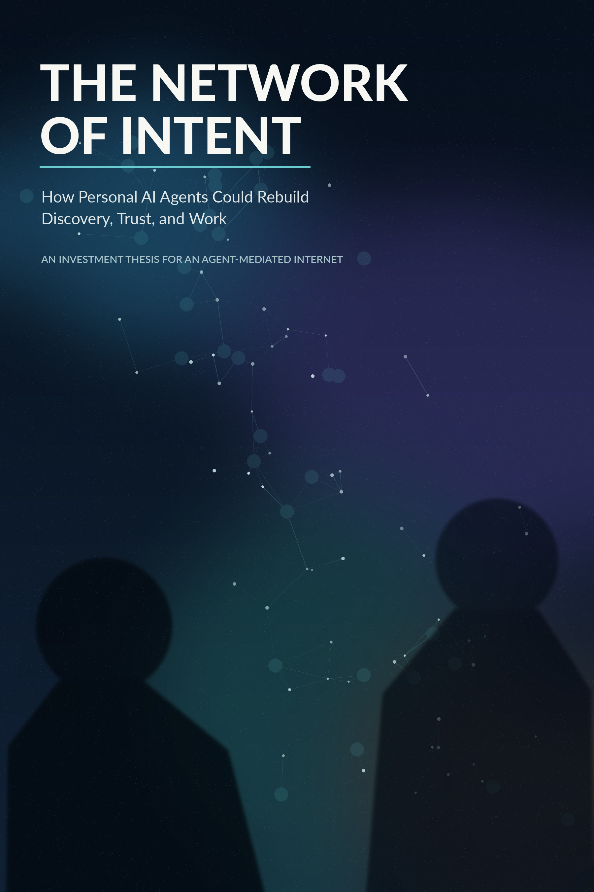
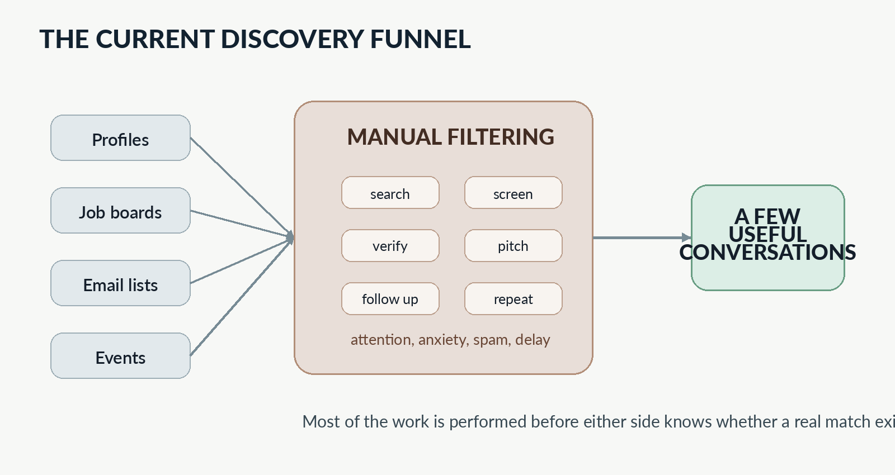
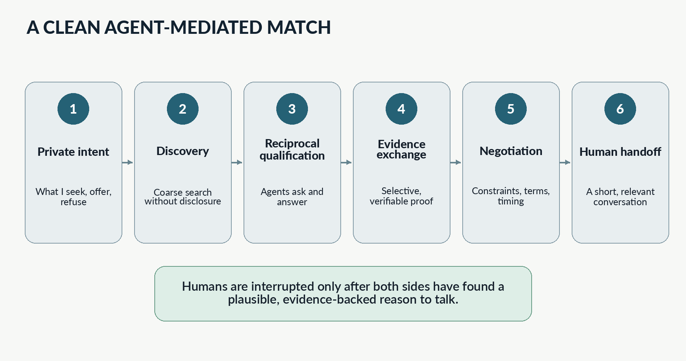
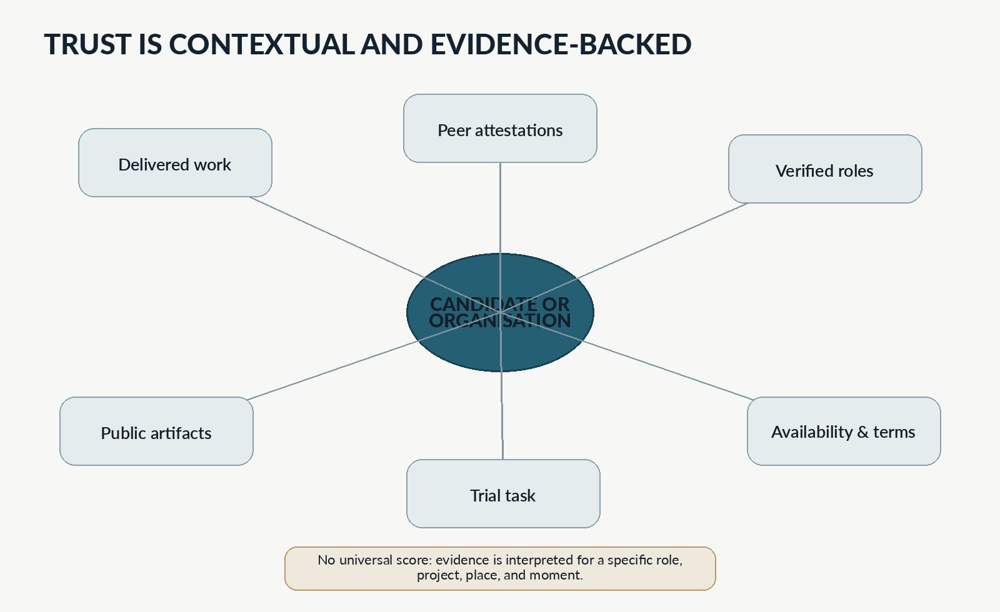
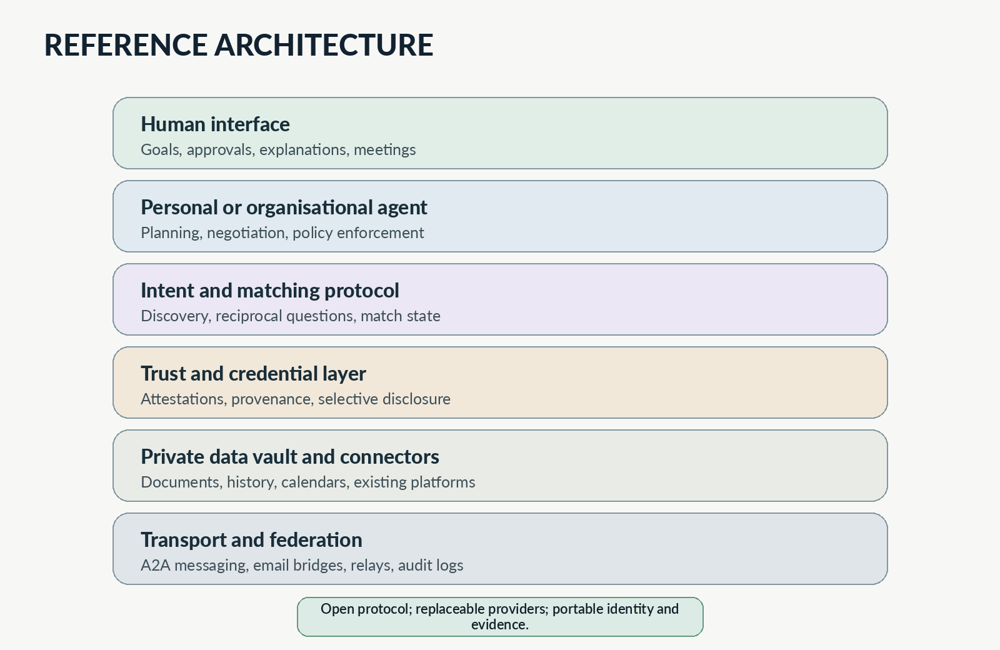
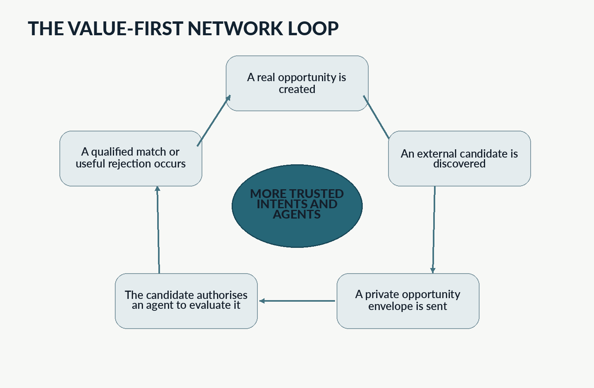

REȚEAUA INTENȚIILOR
Cum ar putea agenții IA personali să reconstruiască descoperirea, încrederea și munca
O teză de investiții pentru un internet mediat de agenți
Ediția tezei de investiții, 2026
Rezumat
Internetul a făcut comunicarea ieftină și informația abundentă, dar nu a făcut ușor ca oamenii potriviți să se găsească. Încă mai căutăm manual, ne demonstrăm relevanța în public, trimitem mesaje nesolicitate, candidăm prin formulare, cerem prezentări, participăm la evenimente, comparăm profiluri incerte și plătim intermediari să filtreze zgomotul rezultat. Aceeași problemă structurală apare în recrutare, atragerea finanțării, colaborarea în cercetare, dezvoltarea afacerilor, relaționarea profesională, serviciile locale și formarea comunităților.
Această carte propune un alt nivel pentru internet: o rețea descentralizată de agenți personali și organizaționali care reprezintă intenții umane explicite. Acești agenți s-ar descoperi reciproc, ar schimba întrebări, ar verifica dovezi, ar negocia constrângeri, ar absorbi spamul și ar aduce oamenii într-o conversație numai când există o potrivire plauzibilă. Produsul urmărit nu este o rețea socială căreia i se adaugă un asistent IA. Este un protocol și o infrastructură de piață pentru descoperire reciprocă.
Oportunitatea este mare, dar teza nu este naivă. Relaționarea mediată de agenți va crea o nouă cursă a înarmării în persuasiune, fraudă de identitate, acreditări sintetice, manipularea clasamentelor și discriminare automatizată. Un sistem viabil trebuie, prin urmare, să facă valoarea reală mai ușor de demonstrat și afirmațiile false costisitor de susținut. Trebuie să folosească reputație contextuală în locul scorurilor universale, divulgare selectivă în locul supravegherii în masă, protocoale deschise în locul unui intermediar central unic și aprobare umană în locul excluderii automate silențioase.
Teza de investiții este că o companie utilă poate fi construită înainte de existența întregii rețele. Produsul inițial poate opera pe webul, e-mailul, profilurile profesionale, bazele de date de cercetare și calendarele de astăzi. Prima sa piață de intrare ar trebui să fie un domeniu dens, cu valoare mare, în care potrivirea slabă este costisitoare și există deja dovezi: formarea proiectelor de tehnologie avansată, consorții de cercetare, expertiză specializată și colaborare antreprenorială în fază incipientă. De acolo, rețeaua se poate extinde către descoperirea investitorilor, recrutarea specialiștilor și, în cele din urmă, piețele serviciilor locale. Indicatorul central nu este implicarea. Este numărul conversațiilor umane calificate create pe unitate de atenție consumată.
Prefață: O problemă de căutare deghizată în problemă socială
Un fondator are nevoie de un investitor care înțelege o tehnologie dificilă, acceptă un orizont lung de dezvoltare și nu va împinge compania spre piața greșită. Un grup de cercetare are nevoie de doi parteneri industriali, un centru clinic și un coordonator dispus să poarte responsabilitatea administrativă înaintea unui termen european. O companie are nevoie de un criptograf care înțelege sisteme de producție, nu doar primitive academice. Un proprietar de locuință are nevoie de un electrician disponibil săptămâna aceasta, autorizat pentru lucrarea necesară, familiarizat cu o clădire veche și apreciat de oameni cu proprietăți similare.
Aceste situații par fără legătură deoarece aparțin unor industrii diferite. Folosesc site-uri, contracte, vocabulare și forme de dovezi diferite. Totuși, sarcina de bază este aproape identică. O parte are o intenție, un set de constrângeri și informații parțiale. Cealaltă are capacități, preferințe, disponibilitate și propriile incertitudini. Ambele trebuie să se descopere reciproc, să dezvăluie suficientă informație pentru a testa compatibilitatea, să negocieze părțile ambigue și să decidă dacă o conversație directă merită timpul.
Astăzi, oamenii fac manual cea mai mare parte a acestei munci. Căutăm, parcurgem, comparăm, scriem, așteptăm, revenim, traducem, verificăm și repetăm. Adesea o facem pretinzând că procesul este mai rațional decât este. Un profil bine finisat poate ține loc de competență. O prezentare printr-o cunoștință poate ține loc de potrivire. Insistența poate ține loc de seriozitate. Vizibilitatea poate ține loc de relevanță. O rată mare de răspuns poate ține loc de valoare. Persoana care tolerează cel mai mult refuz sau creează cea mai convingătoare prezentare poate învinge pe cineva a cărui muncă de fond este mai bună, dar al cărui apetit pentru autopromovare este mai mic.
Prima promisiune a internetului a fost accesul. A doua a fost dezintermedierea. Ambele au fost parțial îndeplinite. Informațiile care necesitau cândva o bibliotecă, un broker, un recrutor, un editor, un agent de turism sau un anuar local pot fi acum accesate în câteva secunde. Totuși, intermediarii nu au dispărut. Mulți au fost înlocuiți de platforme care au devenit mai mari, mai eficiente și mai centrale decât instituțiile înlocuite. Ele agregă identitatea, atenția, tranzacțiile și reputația. Sunt utile tocmai deoarece internetul deschis nu oferă o modalitate fiabilă de a descoperi interlocutorul potrivit sau de a ști în cine să ai încredere.
Inteligența artificială creează o oportunitate de a reveni asupra acestei probleme nerezolvate. Modelele lingvistice pot citi profiluri nestructurate, documente, descrieri de proiecte, e-mailuri, propuneri, recenzii și portofolii. Agenții pot păstra starea, pune întrebări, folosi instrumente, compara alternative și interacționa cu alți agenți. Apar standarde deschise prin care agenții accesează instrumente și comunică între sisteme. Acreditările verificabile și portofelele de identitate digitală devin infrastructură practică, nu doar teme de cercetare.[11][12][13][14]
Dar implementarea evidentă este și cea periculoasă: plasarea unui agent puternic într-o platformă centralizată existentă, oferirea către platformă a și mai multor date despre scopurile și vulnerabilitățile fiecărui utilizator și lăsarea ei să optimizeze potrivirea potrivit propriilor stimulente comerciale. Aceasta ar reduce dificultățile, concentrând totodată puterea. Cu cât agentul ar deveni mai util, cu atât platforma ar ști mai mult despre locurile de muncă pe care le dorim în secret, investitorii de care ne temem, proiectele pe care nu le putem încă anunța, constrângerile financiare pe care nu le publicăm și oamenii pe care ne gândim să îi părăsim.
Această carte argumentează pentru o arhitectură diferită. Agentul ar trebui să reprezinte persoana sau organizația, nu platforma. Ar trebui să poată fi controlat, înlocuit și auditat. Memoria sa privată nu ar trebui să devină automat un set de date corporativ. Ar trebui să poată vorbi onest cu proprietarul său și selectiv cu alți agenți. Ar trebui să poată spune nu. Ar trebui să știe când îi lipsesc dovezile. Ar trebui să explice de ce recomandă o conversație și ce incertitudine rămâne. Scopul nu este automatizarea relațiilor umane. Este eliminarea unei părți suficiente din dificultățile descoperirii și coordonării, astfel încât relațiile umane să înceapă dintr-un punct mai bun.
Sinteza tezei de investiții
Compania propusă ar construi primul nivel practic al unei Rețele deschise a intențiilor: software prin care indivizii și organizațiile creează agenți de încredere ce reprezintă ce caută, ce pot oferi, ce nu vor accepta și ce dovezi sunt dispuși să dezvăluie. Agenții caută atât pe internetul existent, cât și în rețeaua emergentă de agenți. Interacționează cu agenții candidați, efectuează calificare reciprocă, schimbă dovezi selectate, negociază constrângeri și solicită atenție umană numai după stabilirea unui temei credibil pentru interacțiune.
Ideea centrală de produs este că potrivirea nu este o problemă de clasament. Este o conversație în etape, sub informație incompletă. O persoană care caută un loc de muncă nu este doar un vector de competențe. Un investitor nu este doar o dimensiune de fond și o etichetă sectorială. Un partener de cercetare nu este doar o listă de publicații. Un meseriaș nu este doar un scor cu stele. Compatibilitatea depinde de moment, constrângeri, stimulente, stil de lucru, risc, încredere, geografie, buget și detalii pe care niciuna dintre părți nu dorește să le publice global. Produsul trebuie, prin urmare, să combine căutarea cu dialogul controlat.
Ideea privind piața este că mai multe categorii mari de platforme monetizează deja aceeași resursă rară de bază: accesul de încredere la oameni relevanți. LinkedIn monetizează Talent Solutions, Sales Solutions, abonamentele Premium și publicitatea; Microsoft descrie cererea pentru aceste produse ca motor principal al veniturilor LinkedIn.[5] Recruit Holdings operează Indeed și Glassdoor ca piață bilaterală a talentelor.[18] Upwork a raportat venituri de 787,8 milioane de dolari în 2025 și 785.000 de clienți activi, demonstrând o disponibilitate substanțială de a plăti pentru acces mediat la muncă calificată.[6] Documentele depuse de Angi descriu o afacere construită în jurul solicitărilor de servicii, contactelor comerciale potențiale, potrivirii și rezervării în serviciile pentru locuințe.[7] Aceste companii diferă, dar fiecare captează valoare deoarece descoperirea, calificarea și încrederea rămân dificile.
Ideea privind momentul este că elementele tehnice necesare sosesc simultan. Interoperabilitatea între agenți trece de la prototipuri izolate către standarde deschise; Linux Foundation a raportat sprijin organizațional larg și adoptare în producție pentru protocolul A2A în 2026.[11] Model Context Protocol oferă o modalitate standard prin care aplicațiile IA se conectează la instrumente și date, iar specificația sa din 2026 consolidează autorizarea și extensibilitatea.[12] W3C Verifiable Credentials 2.0 oferă un model standardizat pentru acreditări ale căror modificări neautorizate pot fi detectate, în timp ce arhitectura Portofelului european de identitate digitală construiește un ecosistem interoperabil amplu pentru stocarea și prezentarea atestărilor.[13][14] Niciunul dintre aceste standarde nu rezolvă potrivirea, dar ele reduc costul construirii ei.
Piața inițială de intrare nu ar trebui să fie relaționarea socială de masă. Un graf social nou și gol are puțină valoare, iar o promisiune generală de potrivire este prea vagă. Prima piață ar trebui să aibă patru proprietăți: fiecare potrivire reușită este semnificativă economic; căutarea actuală este dificilă și repetată; există suficiente urme publice sau verificabile pentru evaluarea candidaților; iar o parte o poate invita pe cealaltă cu o oportunitate concretă, nu cu o cerere generică de a se alătura unei rețele.
Formarea proiectelor deep-tech, consorțiile de cercetare și colaborarea antreprenorială specializată îndeplinesc aceste condiții. Un coordonator de consorțiu care caută un IMM de securitate cibernetică, un partener de validare clinică sau un banc de testare pentru producție are deja o oportunitate concretă, un termen, o structură bugetară și cerințe de rol. Partenerii potențiali au proiecte, publicații, brevete, depozite de cod, certificări și colaborări anterioare pe care agenții le pot analiza. Produsul inițial poate căuta în CORDIS, EURAXESS, ORCID, site-uri organizaționale, baze publice de proiecte, documente furnizate de utilizatori și rețele profesionale existente. CORDIS însuși expune informații despre proiecte și colaborare, iar ORCID este conceput explicit să conecteze cercetătorii cu contribuțiile lor prin identități persistente.[8][10]
Produsul de intrare poate fi util cu un singur agent de partea clientului. Caută pe vechiul internet, creează o listă scurtă structurată, redactează abordări personalizate, gestionează răspunsuri, pune întrebări suplimentare autorizate și programează întâlniri calificate. Când un candidat extern promițător nu are agent, sistemul trimite un plic de oportunitate: o explicație privată concisă despre motivul pentru care candidatul poate fi relevant, dovezile folosite, ceea ce rămâne confidențial și modul în care candidatul poate autoriza un agent să evalueze oportunitatea. Invitația conține valoare înainte de înregistrare. Acesta este mecanismul propus de răspândire virală.
Avantajul competitiv durabil al companiei nu ar fi modelul lingvistic. Modelele fundamentale vor putea fi substituite. Activele defensabile ar fi graful rezultatelor de încredere, procedurile de potrivire specifice domeniului, sistemul de permisiuni și politici, integrările care permit utilizatorilor să importe dovezi fără să cedeze controlul, guvernanța protocolului și reputația de a nu vinde acces sau poziții în clasament. O rețea de potrivire devine valoroasă când utilizatorii cred că le va proteja intențiile confidențiale, va rezista manipulării și va produce conversații mai bune decât căutarea manuală.
Modelul de afaceri ar trebui să alinieze veniturile cu reducerea dificultăților, nu cu sporirea atenției. Modelul timpuriu recomandat este software-ul pe bază de abonament pentru organizații și echipe profesionale, cu niveluri de utilizare bazate pe căutări active, negocieri între agenți, spații private de lucru și acreditări organizaționale verificate. Integrarea asistată a clienților și operațiunile de potrivire specifice domeniului pot susține veniturile timpurii. Produsele ulterioare pot include implementări de rețele private, servicii de verificare, sprijin pentru tranzacții și infrastructură de protocol. Compania ar trebui să evite publicitatea, clasarea plătită și taxele nediferențiate per contact potențial, deoarece acestea recreează stimulentele pe care produsul există pentru a le elimina.
Riscurile principale sunt severe. O platformă centrală poate copia experiența utilizatorului și exploata un graf existent. Utilizatorii pot să nu aibă încredere să le ofere agenților scopuri private. Agenții se pot inunda reciproc cu oportunități sintetice. Verificarea poate deveni costisitoare și excluzivă. Reglementarea poate trata deciziile de angajare sau acces ca decizii automatizate cu risc ridicat. Un protocol deschis poate transforma interfața într-un produs nediferențiat înainte de construirea unei afaceri durabile. Rețeaua poate optimiza pentru dovezi ușor de interpretat și dezavantaja oamenii neconvenționali a căror valoare este greu de documentat.
Aceste riscuri nu invalidează teza. Ele determină proiectarea. Compania ar trebui să înceapă ca sistem de asistență cu aprobare umană, nu ca filtru autonom de acces. Ar trebui să măsoare conversațiile calificate și colaborările încheiate, nu mesajele trimise. Ar trebui să păstreze feedbackul negativ privat și contextual, nu să creeze scoruri publice permanente. Ar trebui să le permită utilizatorilor să inspecteze și să corecteze dovezile folosite despre ei. Ar trebui să transforme divulgarea reciprocă într-o negociere, nu într-un eveniment de extragere a datelor. Pentru angajare și domenii cu consecințe similare, trebuie să păstreze revizuirea umană și să respecte cerințele de protecție a datelor și guvernanță IA.[15][16]
Cel mai puternic motiv de a investi nu este că IA poate scrie abordări mai bune. Această capacitate devine deja comună și va crește spamul. Teza mai puternică este că IA poate muta unitatea relaționării de la un profil public și un mesaj la o intenție privată și o negociere structurată. Dacă are loc această schimbare, rețeaua dominantă a erei următoare poate să nu fie cea cu cele mai multe postări. Poate fi cea în care avem încredere să decidă când ar trebui să se întâlnească doi oameni.
Cuprins
PARTEA I - EȘECUL INTERNETULUI ÎN DESCOPERIRE
Capitolul 1 - Conectați, dar incapabili să ne găsim
Capitolul 2 - Relaționarea ca muncă manuală
Capitolul 3 - Cinci piețe, o singură problemă structurală
Capitolul 4 - De ce supraviețuiesc intermediarii
PARTEA II - O REȚEA CARE NE REPREZINTĂ
Capitolul 5 - De la asistenți la reprezentanți
Capitolul 6 - Mecanica unei potriviri corecte
Capitolul 7 - Încrederea lasă urme
Capitolul 8 - Cursa înarmării între agenți
Capitolul 9 - Descentralizare fără ideologie
Capitolul 10 - Experiența umană de a fi reprezentat
PARTEA III - TEZA STARTUPULUI
Capitolul 11 - Alegerea pieței de intrare
Capitolul 12 - Rețeaua minimă viabilă
Capitolul 13 - Inițierea efectului de rețea
Capitolul 14 - Model de afaceri, avantaj competitiv durabil și extindere
Capitolul 15 - Riscuri, reglementare și criterii de oprire
Capitolul 16 - Internetul care ne găsește
Surse selectate și note
PARTEA I - EȘECUL INTERNETULUI ÎN DESCOPERIRE
Capitolul 1 - Conectați, dar incapabili să ne găsim
1.1 Distribuția a fost rezolvată înaintea descoperirii
Internetul modern este excepțional de bun la mutarea informației de la o adresă cunoscută la alta. Poate livra un document, transmite o prelegere, publica un profil, trimite un mesaj și stabili un apel video între continente. Este mult mai puțin fiabil când adresa este necunoscută, iar cererea reală este relațională: găsește persoana, echipa, organizația sau furnizorul particular care corespunde unei nevoi nuanțate.
Motoarele de căutare reduc această problemă la documente. Rețelele sociale o reduc la profiluri și proximitate în graf. Piețele online o reduc la listări, filtre, recenzii și oferte. Recrutorii, consultanții, brokerii și administratorii de comunități adaugă judecată umană în jurul acestor baze de date. Fiecare mecanism ajută. Niciunul nu reprezintă intenția completă a ambelor părți.
Luați în considerare un fondator care caută un investitor. Interogarea vizibilă ar putea fi: investitor european, inteligență artificială, etapă seed, investiții între 500.000 EUR și 2 milioane EUR. Interogarea reală este mai lungă. Fondatorul vrea pe cineva care înțelege că produsul poate necesita patru ani de muncă tehnică înainte ca indicatorii convenționali de creștere să devină relevanți; acceptă un model hibrid de cercetare și antreprenoriat; nu cere relocare; poate ajuta la recrutarea unui lider comercial; acceptă componente open source; și nu a finanțat un concurent direct. Fondatorul poate prefera și să nu dezvăluie public că firma are resurse pentru nouă luni sau că o relație existentă între cofondatori este fragilă.
Interogarea reală a investitorului este la fel de complexă. Fondul poate declara că investește în IA aplicată, dar preocupările sale interne includ atenția partenerilor, concentrarea portofoliului, riscul reputațional, capacitatea de finanțare ulterioară, conflictele, momentul, disponibilitatea fondatorului de a primi îndrumare și dacă piața propusă poate susține modelul de randament al fondului. Unele constrângeri sunt explicite. Altele apar numai prin conversație. O bază de date poate recupera candidați, dar nu poate încheia negocierea.
Această distincție explică de ce descoperirea rămâne costisitoare în ciuda informației abundente. Problema nu este doar lipsa datelor. Multe dintre datele relevante sunt condiționale. O parte le va dezvălui numai dacă cealaltă demonstrează mai întâi seriozitate. Unele fapte se schimbă rapid, precum disponibilitatea, bugetul, urgența și apetitul. Unele sunt greu de codificat, precum stilul de lucru sau tipul de dezacord căruia îi poate supraviețui o echipă. O potrivire reală nu este un scor static de similaritate. Este o zonă temporară de compatibilitate produsă prin divulgare reciprocă.
Interfețele dominante ale internetului ascund această complexitate. O casetă de căutare sugerează că utilizatorul poate descrie răspunsul direct. Un profil sugerează că o persoană poate fi rezumată public. Un rating de cinci stele sugerează că încrederea poate fi comprimată într-un număr. Un flux de recomandări sugerează că relevanța este același lucru cu probabilitatea de implicare. Aceste simplificări sunt utile comercial deoarece creează produse scalabile. Îi obligă însă pe oameni să facă interpretarea lipsă în afara sistemului.
Această muncă lipsă apare în apeluri, lanțuri de e-mailuri, prezentări, documente de propunere, serii de interviuri, verificări de referințe, sarcini de testare, cercetare de context și conversații informale. Acolo este descoperită efectiv potrivirea. Tot acolo se pierde timpul.
1.2 Taxa ascunsă a coordonării
Costul descoperirii slabe este rareori înregistrat ca un singur rând într-un buget. Este distribuit între mulți oameni și apare ca muncă normală. Un fondator petrece două ore identificând investitori, trei ore cercetându-le portofoliile, două ore găsind căi de contact și încă o oră adaptând mesaje. Un investitor citește zeci de prezentări aproape identice pentru a găsi una care merită o a doua privire. Un coordonator de cercetare cere descrieri partenerilor, descoperă târziu că unul nu poate îndeplini o regulă de eligibilitate și reconstruiește consorțiul. Un recrutor filtrează sute de candidaturi ușor de trimis, dar slab legate de rol. Un proprietar cere cinci oferte și primește două, niciuna comparabilă cu cealaltă.
Deoarece fiecare sarcină individuală este mică, taxa agregată este ușor de ignorat. Totuși, afectează aproape orice activitate de colaborare. Taxa are cel puțin șase componente.
Prima este costul căutării: găsirea unui set plauzibil de candidați în surse fragmentate. A doua este costul interpretării: înțelegerea faptului dacă etichetele și afirmațiile înseamnă același lucru în context. A treia este costul verificării: determinarea autenticității persoanei, oportunității, acreditării, recenziei sau organizației. A patra este costul abordării: scrierea mesajelor, solicitarea prezentărilor și depășirea apărării căsuței de e-mail. A cincea este costul negocierii: dezvăluirea constrângerilor și testarea alinierii. A șasea este costul de oportunitate: munca valoroasă nefăcută în timp ce toate etapele anterioare consumă atenție.
Platformele optimizează adesea o componentă, agravând alta. Instrumentele de candidatură ușoară reduc costul depunerii pentru candidat, dar pot crește volumul de filtrare pentru angajatori. Abordarea automatizată reduce costul contactării pentru expeditor, dar crește costurile verificării și filtrării pentru destinatari. Piețele de generare a contactelor comerciale simplifică descoperirea pentru clienți, dar pot vinde aceeași solicitare mai multor furnizori, producând o cursă pentru a contacta primul clientul. Sistemele publice de recomandare îmbunătățesc navigarea, dar recompensează actorii care optimizează vizibilitatea, nu actorii care livrează discret valoare.
Chiar proiectarea LinkedIn ilustrează tensiunea. Candidații pot folosi Easy Apply pentru a depune candidatura fără să părăsească platforma, în timp ce recrutorii folosesc filtre avansate de căutare și instrumente de mesagerie pentru a găsi candidați.[1][2] Sales Navigator pune, similar, accentul pe găsirea și abordarea contactelor potențiale potrivite prin filtre extinse.[3] Acestea sunt răspunsuri raționale la aceeași nevoie de piață. Totuși, LinkedIn a introdus limite pentru depunerile Easy Apply tocmai pentru a încuraja candidaturi mai intenționate și a limita automatizarea și boții.[4] Reducerea dificultăților pentru o parte crease prea multă activitate ieftină pentru ca sistemul să o absoarbă.
Aceasta nu este o critică a unei singure companii. Este o lege generală a piețelor în rețea: când trimiterea este mai ieftină decât evaluarea, volumul crește până când evaluarea devine resursa rară. IA generativă accelerează această lege. Poate produce mesaje personalizate, CV-uri adaptate, rezumate de proiecte, propuneri și reveniri la cost marginal neglijabil. Dacă destinatarii evaluează încă manual, rezultatul nu este o piață fără dificultăți. Este o cursă a înarmării în text plauzibil.
O Rețea a intențiilor trebuie, prin urmare, să optimizeze costul perechii, nu doar comoditatea expeditorului. Un sistem reușit ar trebui să facă ieftină exprimarea unei intenții autentice, făcând totodată costisitoare crearea afirmațiilor nefundamentate, cererilor irelevante sau identităților înșelătoare. Ar trebui să reducă atenția totală consumată pe colaborare reușită.

Pâlnia actuală a descoperirii concentrează efortul uman înainte ca oricare parte să știe dacă există o potrivire semnificativă.
1.3 Ce conține efectiv o potrivire bună
O potrivire este adesea descrisă ca o compatibilitate între atribute. Candidatul are o competență; proiectul o cere. Investitorul are o teză; startupul aparține categoriei. Instalatorul deservește codul poștal; clientul locuiește acolo. Acest lucru este necesar, dar insuficient.
O potrivire utilă are cel puțin cinci niveluri. Primul este capacitatea: poate partea să facă ceea ce se cere? Al doilea este intenția: dorește partea efectiv acest tip de oportunitate acum? Al treilea este compatibilitatea constrângerilor: se potrivesc bugetul, momentul, geografia, statutul juridic, riscul și aranjamentele de lucru? Al patrulea este dovada: există suficiente motive să credem afirmațiile? Al cincilea este viabilitatea relațională: pot părțile comunica, negocia și coordona eficient?
Sistemele actuale gestionează primul nivel rezonabil de bine când atributele sunt standardizate. Gestionează slab intenția deoarece profilurile sunt persistente, iar intențiile temporare. Gestionează constrângerile prin formulare care apar adesea prea devreme sau prea târziu. Gestionează dovezile prin recenzii, acreditări, portofolii și referințe, dar fiecare semnal poate fi manipulat sau interpretat în afara contextului. Gestionează viabilitatea relațională în principal obligând oamenii să intre în întâlniri.
Rețeaua propusă tratează aceste niveluri ca etape. Nu dezvăluie totul deodată. Pune întrebarea minimă necesară pentru a decide dacă următorul schimb este justificat. Un agent poate determina mai întâi că un cercetător are expertiza relevantă și poate participa la programul de finanțare vizat. Abia apoi întreabă dacă cercetătorul este disponibil în perioada propunerii. Numai după un răspuns pozitiv solicită o publicație selectată, un rol într-un proiect anterior sau o scurtă explicație a contribuției propuse. Contactul uman începe după reducerea suficientă a incertitudinii pentru a face conversația potențial valoroasă.
Această succesiune contează deoarece confidențialitatea și eficiența sunt legate. Difuzarea mai multor informații poate ușura căutarea, dar expune utilizatorii și creează oportunități noi de manipulare. O rețea de agenți bine concepută ar trebui să obțină descoperire utilă cu mai puțină divulgare publică, nu cu mai multă. Ar trebui să permită unei persoane să spună în privat: „Aș lua în considerare plecarea de la locul meu de muncă pentru un rol cu aceste caracteristici”, fără a anunța acea intenție unui angajator sau unei platforme publicitare. Ar trebui să permită unei organizații să exploreze un parteneriat fără să publice strategia. Ar trebui să permită unui investitor să refuze o tranzacție fără a antrena un model public de reputație pe raționamente confidențiale.
Oportunitatea mai profundă este să transformăm intențiile în obiecte de primă clasă pe internet. Documentele, profilurile, produsele și postările au deja reprezentări standard. Intențiile nu au. Sunt exprimate indirect prin interogări de căutare, anunțuri de angajare, cereri de propuneri, mesaje, postări, liste de dorințe și formulare. Sunt adesea copiate în mai multe sisteme și devin imediat depășite.
Un obiect de intenție ar fi privat implicit, limitat în timp, revocabil și suficient de structurat pentru ca agenții să poată raționa asupra lui. Ar putea conține un scop, constrângeri ferme, preferințe flexibile, dovezi acceptabile, o politică de divulgare, limite de autoritate, expirare și o definiție a succesului. Ar putea evolua prin conversație. Proprietarul l-ar putea inspecta și edita. Agenți diferiți ar putea concura pentru a-l reprezenta.
Odată ce există asemenea obiecte, internetul poate începe să caute nu doar ceea ce a fost publicat, ci și ceea ce oamenii sunt pregătiți să facă.
Capitolul 2 - Relaționarea ca muncă manuală
2.1 LinkedIn și spectacolul relevanței
Relaționarea profesională pe internetul contemporan este organizată în jurul unui profil public, unui graf social, unui flux de conținut și unor instrumente plătite de căutare și contact. LinkedIn este exemplul cel mai clar deoarece deservește simultan mai multe piețe: identitate, recrutare, vânzări, descoperirea carierei, publicitate, învățare și publicare profesională.
Profilul îndeplinește două funcții ușor de confundat. Înregistrează părți din istoricul unei persoane și acționează ca o pagină persuasivă destinată unor viitori cititori necunoscuți. Utilizatorii aleg titluri, rezumate, elemente evidențiate, validări, recomandări și activități vizibile nu doar pentru a se descrie, ci pentru a fi descoperiți și evaluați. Platforma încurajează completitudinea deoarece mai multe date structurate îmbunătățesc căutarea și monetizarea. Utilizatorii învață să scrie simultan pentru recrutori, clienți, investitori, colaboratori și algoritmi.
Aceasta creează un strat de spectacol în jurul vieții profesionale. O persoană poate excela la construirea sistemelor distribuite, dar poate fi slabă la împachetarea acelei munci în cuvinte-cheie recognoscibile. Alta poate înțelege exact cum să apară în căutări pentru „strategie IA”, deși are puține dovezi de execuție. Un fondator poate posta progres încrezător în timp ce își schimbă direcția în privat. Un om de știință poate avea influență substanțială prin mentorat, seturi de date și revizuire tehnică, abia vizibilă în listele de publicații. Profilul public nu este nici fals, nici complet. Este o interfață negociată între identitate și oportunitate.
Descoperirea depinde atunci de vocabularul platformei. Recrutorii caută titluri, competențe, geografie, vechime, companii, școli, cuvinte-cheie și relații în rețea. LinkedIn Recruiter promovează peste patruzeci de filtre avansate, iar Sales Navigator oferă o logică similară pentru contacte comerciale potențiale.[2][3] Aceste instrumente sunt puternice deoarece transformă o populație vastă într-o bază de date interogabilă. Ele favorizează și ceea ce poate fi standardizat și declarat public.
După căutare urmează abordarea. O cerere de conectare, un comentariu, o interacțiune cu o postare, o cale prin cunoștințe sau un InMail trebuie să treacă granița atenției destinatarului. Mesajul este așteptat să fie scurt, specific, personalizat și încrezător. La scară mare, expeditorii folosesc șabloane și automatizare. Destinatarii devin suspicioși față de formulări care semnalau cândva atenție. Personalizarea devine încă o suprafață generată.
Platforma poate adăuga IA la fiecare pas: rescrierea profilului, sugerarea candidaților, generarea mesajelor, rezumarea candidaturilor, prezicerea interesului și recomandarea prezentărilor. Aceasta va face sistemul actual mai rapid. Nu îi schimbă neapărat structura. Utilizatorul continuă să se prezinte public pentru o bază de date centrală. Expeditorul continuă să împingă un mesaj în coada altei persoane. Platforma continuă să beneficieze de mai multă activitate, mai multe date de profil și dependență continuă de graful său.
Alternativa propusă aici nu este abolirea profilurilor sau grafurilor sociale. Sunt surse utile de dovezi. Este subordonarea lor intențiilor private. Agentul unui utilizator ar putea importa date de profil selectate, le-ar putea corecta, adăuga constrângeri nepublice și căuta în mai multe surse. Ar putea reprezenta utilizatorul fără a-i cere să posteze continuu sau să optimizeze fiecare propoziție pentru vizibilitate. Profilul public ar deveni o intrare între multe altele, nu identitatea economică principală.
Această diferență este subtilă, dar fundamentală. În modelul actual, oamenii se adaptează reprezentării rețelei. În modelul propus, rețeaua își adaptează căutarea intenției persoanei.
2.2 E-mailul și economia abordării nesolicitate
E-mailul rămâne soluția universală de rezervă deoarece este suficient de deschis pentru a ajunge la aproape oricine și suficient de matur pentru a traversa granițele organizaționale. Este și locul unde eșecul descoperirii devine cel mai vizibil.
Un flux tipic de abordare începe în afara e-mailului. Expeditorul identifică o categorie de oameni, caută în baze de date și site-uri, colectează adrese, le verifică, segmentează lista, cercetează destinatarii, redactează un mesaj și programează reveniri. Există produse specializate pentru fiecare pas. Expeditorul măsoară deschiderile, răspunsurile, întâlnirile și conversiile. Destinatarul vede doar mesajul final și trebuie să decidă dacă este legitim, relevant, sigur și merită un răspuns.
Asimetria este severă. Un expeditor poate genera mii de mesaje plauzibile. Fiecare destinatar trebuie să le evalueze individual. Filtrele de spam pot bloca abuzul evident, dar abordarea automatizată de înaltă calitate este concepută să semene cu o comunicare umană autentică. Cu cât sistemele generative devin mai bune, cu atât finisajul lingvistic indică mai puțin că expeditorul a investit atenție.
E-mailul nesolicitat nu este în sine rău. Multe relații valoroase încep fără o prezentare. Problema este că protocolul nu oferă aproape nicio modalitate structurată de a stabili relevanța înainte ca mesajul să intre în căsuța poștală. Expeditorul nu poate dovedi ușor de ce a fost ales destinatarul. Destinatarul nu poate cere unui agent să negocieze fără să expună o adresă sau să răspundă. Nu există un mecanism standard pentru divulgare reciprocă, cerințe de dovezi sau acces la atenție cu frecvență limitată.
Drept urmare, oamenii dezvoltă apărări grosiere. Ignoră expeditorii necunoscuți, deleagă examinarea căsuței poștale, publică formulare de contact, ascund adrese, se bazează pe asistenți sau cer prezentări prin cunoștințe. Aceste apărări protejează atenția, dar reduc deschiderea. Cineva din afara rețelei potrivite poate avea un motiv cu adevărat important să ia legătura și totuși să fie exclus de filtre.
O rețea de agenți ar putea păstra deschiderea e-mailului, adăugând un nivel de calificare înaintea căsuței poștale. Agentul expeditorului ar crea un mesaj de intenție semnat, cu o afirmație minimă: scopul contactului, de ce destinatarul pare relevant, ce dovezi susțin deducția, ce se solicită și ce este dispus expeditorul să dezvăluie. Agentul destinatarului ar putea accepta, respinge, cere clarificări, impune o probă sau direcționa cererea către alt reprezentant. Căsuța poștală umană ar primi numai schimburile care trec de politica utilizatorului.
În timpul tranziției, acest lucru poate funcționa prin e-mail obișnuit. Agentul poate trimite un mesaj lizibil cu un atașament sau link lizibil de mașini. Destinatarul nu trebuie să se alăture unei rețele noi pentru a înțelege cererea. Dacă are un agent compatibil, agenții continuă direct. Dacă nu, mesajul funcționează totuși ca o prezentare de calitate superioară.
Această capacitate de tranziție este importantă strategic. Un startup nu poate aștepta adoptarea universală. Trebuie să folosească canalele existente, înlocuindu-le treptat povara coordonării manuale.
2.3 Prezentări prin cunoștințe, evenimente și intermediari umani
Prezentările prin cunoștințe persistă deoarece comprimă încrederea. Când o persoană respectată conectează alte două, destinatarul deduce că expeditorul este real, că a avut loc o verificare a relevanței și că ignorarea mesajului poate avea un cost social. Persoana care face prezentarea împrumută reputație interacțiunii.
Acest mecanism este eficient, dar rar. Favorizează oamenii deja integrați în rețele influente. Consumă și atenția celui care face prezentarea și creează obligații informale. Fondatorii le cer repetat acelorași investitori prezentări. Cercetătorii depind de colegii seniori pentru a intra în consorții. Candidații caută recomandări în companii. Furnizorii de servicii se bazează pe recomandări locale din vorbă în vorbă. Rezultatul este un sistem social de direcționare care funcționează bine în interiorul grupurilor și slab peste granițele lor.
Conferințele, întâlnirile comunitare, zilele demonstrative, târgurile și asociațiile profesionale abordează aceeași problemă creând medii temporare de mare densitate. Participanții plătesc prin călătorie, timp, sponsorizare și atenție. Parcurg ecusoane, programe, standuri, liste de vorbitori și evenimente conexe. Cele mai valoroase conversații sunt adesea întâmplătoare, dar întâlnirea fericită este costisitoare când sunt prezente mii de persoane și fiecare are doar câteva ore.
Intermediarii profesioniști formalizează funcția de direcționare. Recrutorii, firmele de căutare a directorilor, bancherii de investiții, agenții de talente, consultanții pentru consorții, brokerii imobiliari și operatorii de piețe mențin rețele și interpretează nevoi. Intermediarii buni fac mai mult decât să furnizeze nume. Traduc între părți, înțeleg constrângeri ascunse, protejează confidențialitatea și gestionează momentul. Valoarea lor demonstrează că potrivirea este conversațională și contextuală.
O rețea credibilă de agenți ar trebui să învețe de la intermediari, nu să îi desconsidere. Scopul nu este afirmația că software-ul poate înlocui instantaneu judecata umană. Este codificarea părților repetitive ale intermedierii și permiterea intervenției experților umani acolo unde ambiguitatea, răspunderea sau competența relațională contează cel mai mult.
De fapt, intermediarii pot deveni clienți timpurii importanți și participanți la ecosistem. Un recrutor ar putea opera un agent cu cunoștințe de domeniu și o rețea de candidați de încredere. Un consultant de cercetare ar putea publica un agent de capacități care înțelege regulile programelor și structura consorțiilor. O asociație profesională locală ar putea certifica membrii și direcționa cereri. Rețeaua deschisă ar permite intermediarilor specializați să concureze prin judecată și încredere fără să dețină identitatea utilizatorului sau să închidă relația într-o singură piață.
Viitorul probabil nu este dezintermedierea în sens literal. Este o schimbare a lucrurilor pentru care sunt plătiți intermediarii. Alcătuirea listelor cu valoare mică, filtrarea repetată și urmărirea stadiului pot fi automatizate. Interpretarea cu valoare mare, răspunderea, soluționarea conflictelor și expertiza de domeniu rămân valoroase. Intermediarul devine operator de agenți, verificator, garant sau gestionar al excepțiilor, nu paznic al accesului la un director proprietar.
Capitolul 3 - Cinci piețe, o singură problemă structurală
3.1 Candidatura pentru locuri de muncă
Căutarea unui loc de muncă este unul dintre cele mai clare exemple de piață afectată de automatizare asimetrică. Angajatorii publică descrieri alcătuite din nevoi organizaționale, șabloane vechi, limbaj de conformare și cerințe aspiraționale. Candidații caută după titlu, locație, salariu, cuvinte-cheie și companie. Își adaptează CV-urile, completează formulare, scriu scrisori de intenție, parcurg evaluări și așteaptă. Angajatorii folosesc sisteme de urmărire a candidaturilor, întrebări de filtrare, căutări ale recrutorilor, recomandări și interviuri pentru a reduce volumul rezultat.
Easy Apply ilustrează atât beneficiul, cât și limita reducerii dificultăților. LinkedIn permite candidaților să depună direct prin platformă, în timp ce unele posturi redirecționează către site-ul angajatorului.[1] Comoditatea este reală. Ea face și strategiile de candidatură în masă mai ieftine. Limitele ulterioare ale LinkedIn privind depunerile Easy Apply recunosc nevoia de a restrânge boții și de a încuraja comportamentul mai intenționat.[4]
Produsul IA evident automatizează candidaturile. Identifică posturi, adaptează CV-uri, scrie răspunsuri și depune la scară mare. Aceasta ajută temporar un utilizator, dar înrăutățește piața dacă fiecare candidat procedează astfel. Angajatorii răspund cu mai multă filtrare, filtre mai puternice, interviuri automatizate, verificări de identitate și evaluări. Candidații folosesc apoi IA pentru a se pregăti pentru acele filtre. Procesul devine o competiție între agenți de candidatură și agenți de filtrare, în timp ce ambele părți știu încă puțin despre potrivirea efectivă.
Un sistem reciproc ar începe diferit. Candidatul creează o intenție privată de muncă: probleme dorite, roluri acceptabile, interval salarial, constrângeri de locație, disponibilitate, stil de lucru, obiective de învățare, excluderi și dovezi. Angajatorul creează o intenție de rol care separă constrângerile ferme de preferințe și distinge munca efectiv necesară de etichetele convenționale. Agenții testează compatibilitatea înainte de crearea unei candidaturi.
Candidatul poate dezvălui așteptările salariale numai după ce angajatorul confirmă intervalul. Angajatorul poate dezvălui componența echipei numai după ce candidatul demonstrează experiență relevantă. Agentul candidatului poate întreba dacă un rol nominal la distanță necesită călătorii neanunțate. Agentul angajatorului poate solicita o mostră de lucru proporțională cu incertitudinea. Ambii agenți pot identifica contradicții: o companie care promovează autonomia, dar cere aprobare zilnică, sau un candidat care caută libertate de cercetare, dar preferă sarcini strict specificate.
Interviul uman începe atunci cu întrebările nerezolvate, nu cu repetarea CV-ului. Aceasta nu elimină judecata. Îmbunătățește intrările pentru judecată.
Angajarea este și domeniul în care erorile de proiectare pot cauza cel mai direct prejudiciu. Agenții ar putea reproduce discriminarea, deduce trăsături sensibile, ascunde oportunități sau crea respingeri opace. Regulamentul european privind IA tratează anumite utilizări în angajare ca având risc ridicat, cu calendare și obligații specifice, iar Articolul 22 din GDPR protejează persoanele împotriva anumitor decizii exclusiv automatizate cu efecte semnificative.[15][16] Un startup ar trebui, prin urmare, să intre în domeniul angajării după ce a dezvoltat mecanisme solide de explicație, audit, consimțământ și revizuire umană în domenii cu consecințe mai reduse.
3.2 Căutarea investitorilor
Atragerea finanțării combină căutarea în baze de date, ierarhia socială, spectacolul narativ și alegerea momentului. Fondatorii folosesc site-uri ale investitorilor, pagini de portofoliu, baze de date, rețele de acceleratoare, LinkedIn, liste de conferințe și prezentări. Clasifică fondurile după etapă, geografie, sector, mărimea investiției, comportamentul de investitor principal și reputație. Pregătesc prezentări, memorii, camere de date, indicatori și abordări atent programate.
Procesul vizibil este ineficient deoarece etichetele investitorilor sunt largi, iar comportamentul se schimbă odată cu condițiile pieței. Un fond poate spune că investește în deep tech, dar să prefere proiecte cu dovezi comerciale pe termen scurt. O divizie corporativă de investiții poate părea aliniată strategic, dar se poate mișca prea lent pentru resursele rămase ale startupului. Un investitor providențial poate avea experiență operațională relevantă, dar niciun apetit pentru investiții ulterioare. Un fondator poate spune că urmărește capital, când de fapt are nevoie de un președinte al consiliului, un cofondator comercial, acces la clienți sau guvernanță răbdătoare.
Prezentările prin cunoștințe domină deoarece semnalează legitimitate și reduc povara căutării pentru investitor. Ele consolidează și concentrarea rețelei. Fondatorii din afara centrelor consacrate pot petrece luni încercând să ajungă la oameni al căror mandat nu a fost niciodată compatibil.
Un agent de potrivire cu investitori nu ar trebui să înceapă prin generarea mai multor e-mailuri de prezentare. Ar trebui să construiască un model de potrivire reciprocă. De partea fondatorului, acesta include nevoia reală de finanțare, guvernanța acceptabilă, dependențele strategice, orizontul de timp, ajutorul dorit, limitele divulgării și motivele pentru care compania ar putea refuza capitalul. De partea investitorului, include construcția portofoliului, rezervele disponibile, expertiza partenerilor, ritmul actual, conflictele, orizontul randamentului, procesul decizional și disponibilitatea de a susține profilul specific de risc.
Agentul poate apoi etapiza divulgarea. Un startup poate partaja inițial un rezumat tehnic și de piață cu informații eliminate. Un agent al investitorului poate explica ce dovezi ar justifica acces suplimentar. Agentul fondatorului poate testa dacă comportamentul fondului în investiții anterioare corespunde filosofiei declarate, folosind urme publice și referințe. Odată ce ambele părți trec un prag, agenții deschid un flux de cameră de date și programează o întâlnire cu o agendă clară.
Acest sistem ar reduce importanța teatrului prezentărilor, dar nu ar elimina narațiunea. Investitorii au în mod legitim nevoie să înțeleagă cum gândesc, conving, recrutează și răspund fondatorii la incertitudine. Scopul nu este înlocuirea convingerii cu un scor. Este asigurarea faptului că ea este evaluată după eliminarea incompatibilităților de bază și organizarea dovezilor.
Cel mai mare pericol de produs pe această piață este clasarea contra cost. Fondatorii sunt vulnerabili, iar investitorii au atenție rară. O platformă poate taxa ușor startupurile pentru proeminență sau vinde acces la contacte potențiale. Aceasta ar corupe nivelul de încredere. O Rețea a intențiilor trebuie să precizeze explicit că plata cumpără reprezentare și flux de lucru, nu un loc mai bun pe lista scurtă a celeilalte părți.
3.3 Construirea consorțiilor de cercetare și inovare
Colaborarea în cercetare este prezentată adesea ca proces intelectual, dar formarea consorțiilor este și un proces logistic și politic. Un apel de finanțare definește rezultate așteptate, reguli de eligibilitate, bugete, calendare, maturitate tehnologică, cerințe de impact, constrângeri geografice și obligații de raportare. Un coordonator trebuie să le traducă în roluri și să găsească organizații dispuse și capabile să le îndeplinească.
Căutarea are loc prin proiecte anterioare, rețele personale, conferințe, puncte naționale de contact, CORDIS, EURAXESS, liste de e-mail, consultanți și abordare directă. CORDIS oferă un depozit public de proiecte finanțate de UE, participanți, rezultate și rețele de colaborare, iar EURAXESS oferă instrumente pentru locuri de muncă, finanțare, găzduire și parteneriate.[8][9] ORCID ajută la identificarea cercetătorilor și conectarea lor cu contribuțiile.[10] Informația există, dar este fragmentată și exprimă rareori intenția actuală.
O universitate poate avea publicații relevante, dar nicio capacitate administrativă de a se alătura altei propuneri. Un IMM poate avea tehnologia, dar să aibă nevoie de dezvoltare finanțată, nu de muncă neplătită la propunere. Un spital poate fi ideal științific, dar incapabil să obțină la timp aprobările etice. Un participant la un proiect anterior poate părea experimentat, în timp ce oamenii responsabili au plecat. Un consorțiu poate părea complet și totuși să îi lipsească un partener dispus să își asume un pachet dificil de lucru.
Un flux mediat de agenți poate reprezenta apelul însuși ca obiect de intenție. Coordonatorul definește capacitățile necesare, țările eligibile, limitele rolurilor, ipotezele bugetare, dovezile, termenele și incertitudinile deschise. Agentul caută în surse publice și rețele private, apoi contactează agenți organizaționali cu o ipoteză precisă de rol. Agenții candidați răspund cu disponibilitate, constrângeri, dovezi relevante și întrebări. Sistemul identifică acoperirea lipsă, capacitatea duplicată, riscurile de dependență și conflictele probabile de negociere.
În loc de douăzeci de apeluri introductive vagi, coordonatorul primește cinci candidați ai căror agenți au confirmat deja interesul, eligibilitatea, momentul și o contribuție plauzibilă. Prima întâlnire umană se poate concentra pe potrivirea științifică și strategică.
Aceasta este o piață de intrare puternică deoarece valoarea unei potriviri corecte este mare, costul căutării actuale este vizibil, iar invitațiile reușite recrutează natural participanți noi. Este și imperfectă. Piața este ciclică în jurul apelurilor, achizițiile pot fi complexe, iar multe organizații de cercetare au procese decizionale lente. Startupul trebuie, prin urmare, să proiecteze agenți organizaționali reutilizabili care susțin mai multe oportunități, nu consultanță punctuală pentru propuneri.
3.4 Găsirea meseriașilor calificați și a serviciilor locale
La prima vedere, găsirea unui electrician are puține în comun cu formarea unui consorțiu de cercetare. Vocabularul și mărimea tranzacției diferă, dar etapele potrivirii sunt similare.
Un proprietar descrie o problemă având cunoștințe tehnice incomplete. Motoarele de căutare și directoarele produc furnizori. Piețele colectează solicitări de servicii și le direcționează către profesioniști. Recenziile, autorizațiile, fotografiile, timpul de răspuns, locația și prețul ajută clientul să aleagă. Furnizorii plătesc prin publicitate, abonamente, comisioane sau taxe pentru contacte potențiale. Documentele publice depuse de Angi descriu solicitările de servicii, contactele potențiale, potrivirea, rezervarea și furnizorii constituiți independent ca părți centrale ale modelului său.[7]
Dificultatea nu este doar descoperirea. Clientul poate să nu știe ce lucrare este necesară. Furnizorul are nevoie de fotografii, detalii despre clădire, condiții de acces, urgență, materiale și informații despre necesitatea intervenției prealabile a altui meseriaș. Ofertele sunt greu de comparat deoarece sfera lucrării diferă. Disponibilitatea se schimbă rapid. Recenziile pot reflecta punctualitatea, nu calitatea tehnică, sau un furnizor poate excela la construcții noi și să fie nepotrivit pentru clădiri istorice.
Un agent al gospodăriei ar putea păstra informații private despre proprietate: vechime, sisteme, reparații anterioare, garanții, materiale preferate, reguli de acces și politică bugetară. Agentul unui meseriaș ar putea păstra calificări, raza serviciilor, echipamente, disponibilitate actuală, preferințe de lucrări și dovezi din lucrări finalizate. Agenții ar putea clarifica problema, solicita informații de diagnostic sigure, determina dacă este necesar un serviciu de urgență, compara sfera lucrării și programa o inspecție.
Încrederea trebuie să rămână locală și contextuală. Un scor universal nu este suficient. Dovezile relevante pot include o autorizație, asigurare, finalizarea verificată a unor lucrări similare, relații cu furnizorii și atestări de la clienți apropiați cu proprietăți comparabile. Un furnizor nou ar trebui să poată intra prin verificare mai puternică sau lucrări supravegheate, nu să fie exclus permanent de lipsa recenziilor istorice.
Această piață este atrăgătoare deoarece oamenii resimt repetat dificultatea. Este și exigentă operațional. Siguranța, răspunderea, plățile, reglementarea locală, disputele și verificarea în lumea fizică sunt dificile. Ar trebui, prin urmare, să fie o piață de extindere după ce rețeaua are mecanisme mature de identitate, dovezi, programare și soluționare a disputelor.
3.5 Dincolo de tranzacții
Nu orice conexiune utilă este un loc de muncă, o investiție, un contract sau o achiziție. Oamenii caută mentori, colaboratori, voluntari, parteneri de studiu, pacienți cu afecțiuni rare similare, grupuri locale de ajutor reciproc, colaboratori artistici, evaluatori colegiali, consilieri și comunități în care un interes dificil este înțeles.
Platformele actuale obligă adesea aceste nevoi să intre în fluxuri de conținut. O persoană postează public, se alătură grupurilor, urmărește hashtaguri, caută pe forumuri sau întreabă prieteni. Descoperirea depinde de vizibilitate și noroc. Platformele optimizează pentru activitate deoarece activitatea poate fi monetizată, chiar când scopul real al utilizatorului este o singură relație durabilă.
O rețea a intențiilor ar putea susține scopuri necomerciale fără a le transforma într-o piață. Un inginer pensionar ar putea oferi două ore pe lună pentru a îndruma echipe care lucrează la sisteme energetice. Un doctorand poate căuta un partener de lectură într-un domeniu îngust. Un pacient poate dori să vorbească cu cineva care a trecut printr-o anumită decizie de tratament, sub reguli stricte de confidențialitate. O comunitate poate avea nevoie de trei voluntari cu competențe specifice pentru un weekend.
Sistemul nu ar trebui să deducă faptul că orice capacitate disponibilă trebuie monetizată. Utilizatorii au nevoie de control explicit asupra intențiilor comerciale, reciproce, civice, private sau exploratorii. Acesta este un motiv pentru care infrastructura nu ar trebui finanțată în principal prin publicitate sau extragere de valoare din tranzacții. Un model de afaceri care cere ca fiecare potrivire să genereze o taxă va neglija sau distorsiona unele dintre cele mai umane utilizări ale rețelei.
Teza de investiții începe cu coordonarea profesională valoroasă economic deoarece aceasta poate finanța infrastructura. Scopul mai larg este să facă internetul mai bun la formarea relațiilor utile, inclusiv a celor cărora piețele nu le stabilesc bine prețul.
Capitolul 4 - De ce supraviețuiesc intermediarii
4.1 Ei agregă resurse rare, nu doar date
Este ușor să criticăm intermediarii ca încasatori de rente. Este mai util să întrebăm ce resursă rară agregă.
LinkedIn agregă identitatea profesională, contextul grafului și atenția. Site-urile de locuri de muncă agregă roluri deschise și trafic de candidați. Bazele de date ale investitorilor agregă informații despre firme și istorice de tranzacții. Recrutorii agregă încredere, interpretare și acces. Portalurile de cercetare agregă apeluri, proiecte și evidențe instituționale. Piețele de servicii pentru locuințe agregă cererea consumatorilor, furnizorii locali, recenziile și rezervarea. Conferințele agregă oameni în timp și spațiu.
Resursa rară de bază nu este numai informația. Este disponibilitatea credibilă. Un director poate enumera zece mii de experți, dar numai câțiva sunt relevanți, interesați, liberi și siguri de contactat. O platformă creează valoare când transformă o căutare nelimitată într-un set gestionabil de acțiuni posibile.
Aceasta explică de ce simpla descentralizare eșuează adesea. Publicarea deschisă a datelor nu creează automat o piață utilizabilă. Cineva trebuie să le normalizeze, actualizeze, ordoneze, protejeze, să rezolve abuzurile și să ofere o interfață fiabilă. Un protocol fără calitate de produs devine un standard gol. Un produs fără guvernanță devine încă un filtru central de acces.
Startupul propus trebuie, prin urmare, să îndeplinească de la început funcții reale de intermediar. Trebuie să direcționeze cereri, să aplice politici, să verifice dovezi selectate, să gestioneze consimțământul și să ofere căi de contestare. Afirmația nu este că intermediarii dispar. Afirmația este că utilizatorii ar trebui să poată schimba intermediarii fără să își piardă identitatea, istoricul și accesul la rețea.
4.2 Ei monetizează dificultățile
Multe modele de afaceri ale platformelor depind de dificultățile pe care le reduc. Recrutorii sunt plătiți deoarece angajarea este dificilă. Bazele de date ale investitorilor sunt valoroase deoarece cunoașterea este fragmentată. Piețele percep taxe deoarece încrederea și gestionarea tranzacțiilor sunt rare. Sistemele de generare a contactelor potențiale câștigă bani controlând accesul la cerere. Rețelele sociale monetizează vizibilitatea deoarece acoperirea organică este incertă.
Aceasta creează o problemă de stimulente. O platformă poate îmbunătăți potrivirea, păstrând suficientă opacitate încât utilizatorii să continue să plătească pentru filtre, promovări, mesaje și acces. Poate optimiza cantitatea de activitate, nu viteza cu care utilizatorii părăsesc platforma după ce și-au rezolvat problema. Un serviciu de întâlniri, un site de locuri de muncă sau o rețea profesională se poate confrunta cu o tensiune structurală: succesul utilizatorului poate reduce implicarea viitoare.
Rețeaua intențiilor ar trebui să facă o promisiune diferită. Unitatea sa de valoare este o intenție rezolvată. O căutare se poate încheia cu o potrivire, o respingere justificată, o cerință revizuită sau dovada că nu există în prezent un interlocutor potrivit. Fiecare rezultat economisește atenție. Produsul ar trebui să fie dispus să spună că piața nu conține o potrivire credibilă, nu să fabrice o listă pentru a părea util.
Aceasta necesită indicatori diferiți de cei convenționali ai platformelor. Utilizatorii activi zilnic, timpul pe site, mesajele trimise și afișările fluxului sunt indicatori primari slabi. Indicatori mai buni includ timpul până la o conversație calificată, procentul interacțiunilor între agenți care ajung la divulgare reciprocă, acceptarea umană a listelor scurte, conversia întâlnirilor în colaborări, reducerea întrebărilor repetate și rata la care utilizatorii corectează ipotezele agenților.
O companie finanțată prin abonamente se poate alinia mai ușor acestor indicatori decât una finanțată prin reclame sau poziționare plătită. Abonamentul nu este automat etic, dar face relația cu clientul mai clară. Organizațiile plătesc deoarece agentul reduce costul coordonării și îmbunătățește deciziile. Indivizii pot primi un agent de bază ca infrastructură, cu funcții profesionale plătite de echipe sau organizații contrapărți.
4.3 De ce IA în platformele existente nu este suficientă
Platformele existente vor adăuga agenți tot mai capabili. Recrutorii vor cere unui asistent de angajare să găsească candidați. Echipele de vânzări vor cere agenților să identifice conturi și să redacteze abordări. Candidații vor cere agenților să caute și să depună candidaturi. Piețele vor rezuma cereri și recomanda furnizori. Aceste produse vor fi utile și vor valida comportamentul mai larg.
Argumentul investițional pentru o rețea nouă depinde de ceea ce agenții platformelor centralizate nu pot oferi credibil.
În primul rând, un agent al platformei este limitat de datele și stimulentele platformei. Poate integra surse externe, dar afacerea beneficiază când utilizatorul rămâne dependent de graful său. În al doilea rând, nu poate reprezenta ușor ambele părți fără conflicte. Un agent plătit de un angajator și găzduit de o platformă de recrutare poate pretinde că ajută candidații, dar optimizarea sa principală nu este neutră. În al treilea rând, utilizatorii pot ezita să dezvăluie intenții private unei platforme ale cărei produse de publicitate, clasare sau întreprindere depind de acele intenții. În al patrulea rând, portabilitatea este slabă. Un utilizator care schimbă furnizorul poate pierde istoricul, semnalele de încredere și preferințele învățate.
O rețea deschisă a intențiilor se poate diferenția prin reprezentare asemănătoare celei fiduciare: politica agentului este legată explicit de utilizator. Utilizatorul poate exporta modelul de intenție, acreditările, istoricul negocierilor și preferințele. Alți furnizori pot concura pentru operarea agentului. Protocolul separă identitatea și comunicarea de interfața aplicației.
Această poziție nu este ușor de apărat. O platformă mare poate oferi comoditate și densitate imediată a grafului. Startupul trebuie, prin urmare, să interopereze cu platformele existente înainte de a le contesta. Ar trebui să le permită utilizatorilor să conecteze LinkedIn, e-mail, calendare, depozite de cod, sisteme CRM, identificatori de cercetare și documente. Ar trebui să producă valoare din acele surse, păstrând deasupra lor un nivel privat și portabil.
Analogia strategică nu este o rețea socială care înlocuiește altă rețea socială. Este e-mailul care funcționează între furnizori, webul care funcționează între editori sau protocoalele de plată care funcționează între bănci și aplicații. Compania poate fi importantă fără a deține fiecare nod, cu condiția să dețină un produs de încredere, o implementare solidă și o guvernanță influentă a protocolului.
PARTEA II - O REȚEA CARE NE REPREZINTĂ
Capitolul 5 - De la asistenți la reprezentanți
5.1 Diferența dintre a ajuta și a reprezenta
Majoritatea produselor IA personale sunt descrise ca asistenți. Răspund la întrebări, rezumă documente, redactează mesaje, caută în calendare și execută sarcini. Cuvântul este confortabil deoarece sugerează un instrument subordonat. Un agent de relaționare are nevoie de un concept mai puternic. Trebuie să își reprezinte proprietarul în interacțiuni în care cealaltă parte are propriile interese.
Reprezentarea schimbă proiectarea în patru moduri.
În primul rând, agentul are nevoie de limite de autoritate. Trebuie să știe ce poate divulga, promite, programa, refuza sau negocia. Un asistent de redactare poate produce o propoziție și aștepta. Un reprezentant poate avea nevoie să refuze o cerere înainte ca omul să o vadă. Acea putere trebuie să fie explicită, revocabilă și îngustă.
În al doilea rând, agentul are nevoie de un model durabil al intereselor, nu doar de un istoric al conversațiilor. Ar trebui să înțeleagă constrângeri ferme, preferințe flexibile, tensiuni nerezolvate și priorități care se schimbă după context. Un fondator poate accepta o evaluare mai mică de la un investitor valoros strategic, dar respinge aceleași condiții de la un fond pasiv. Un cercetător se poate alătura unui proiect numai dacă acesta finanțează o anumită direcție de lucru. Un proprietar poate prefera cea mai ieftină reparație pentru o proprietate închiriată și cea mai durabilă reparație pentru locuința familiei.
În al treilea rând, agentul trebuie să distingă persuasiunea de adevăr. Sarcina sa nu este maximizarea șansei ca fiecare cerere să reușească. Ar trebui să ajute proprietarul să prezinte clar dovezi relevante, dar nu să inventeze potrivirea. Un reprezentant de încredere conchide uneori că proprietarul nu este potrivit, că oportunitatea este descrisă greșit sau că este necesară mai multă pregătire.
În al patrulea rând, agentul trebuie să răspundă în fața proprietarului. Utilizatorul ar trebui să poată inspecta de ce a fost contactată o persoană, ce informații au fost partajate, ce afirmații au fost făcute și ce politică a fost aplicată. Un reprezentant uman poate fi întrebat. Unul digital ar trebui să lase o urmă de audit mai bună.
Aceasta sugerează un principiu de proiectare: agentul ar trebui să optimizeze interesul reprezentat pe termen lung, nu conversia locală. Poate alege să nu trimită un mesaj care ar putea obține o întâlnire, dar ar afecta reputația. Poate proteja utilizatorul de o oportunitate prestigioasă cu constrângeri incompatibile. Poate recomanda recunoașterea onestă a incertitudinii deoarece dovezile sunt slabe.
Distincția este importantă comercial. Un asistent generic va deveni o funcție a sistemelor de operare, clienților de e-mail, sistemelor CRM și platformelor profesionale. Un reprezentant este o relație de produs construită pe încredere, politici și înțelegere acumulată. Utilizatorii pot schimba modelele păstrând nivelul de reprezentare.
5.2 Modelul de intenție
Structura centrală de date a rețelei propuse este un model de intenție. Nu este un profil și nici doar un prompt. Este o descriere versionată a unui scop și a condițiilor în care agentul îl poate urmări.
Un model practic de intenție conține cel puțin zece elemente.
Scopul precizează schimbarea dorită: găsirea unui investitor, recrutarea unui specialist, formarea unui consorțiu, angajarea unui furnizor de servicii, găsirea unui mentor sau explorarea unei colaborări. Valoarea oferită precizează contribuția proprietarului. Constrângerile ferme definesc condiții ce nu pot fi încălcate. Preferințele flexibile exprimă compromisuri. Dovezile indică afirmații pe care agentul le poate folosi. Regulile de divulgare stabilesc cine poate vedea ce și în ce etapă. Regulile de autoritate definesc acțiunile pe care agentul le poate întreprinde. Limitele temporale împiedică intențiile depășite să circule nelimitat. Limitele de risc restrâng angajamentele, expunerea identității și acțiunile externe. Criteriile de succes definesc când intenția se poate închide.
Aceste elemente nu trebuie să apară ca un formular complex. Utilizatorul poate descrie situația în limbaj obișnuit. Agentul pune întrebări de clarificare și convertește răspunsurile într-un model structurat. Utilizatorul revizuiește apoi o reprezentare scurtă a modelului, în special constrângerile ferme și politica de divulgare.
De exemplu, un fondator ar putea spune:
Căutăm 1,5 milioane EUR pentru a finaliza un proiect-pilot industrial. Prefer un investitor activ care poate ajuta la recrutarea unui director general, dar nu vreau relocare forțată sau ipoteza unui exit în trei ani. Putem dezvălui memoriul tehnic după ce investitorul confirmă mărimea investiției, experiența relevantă în portofoliu și absența conflictelor. Nu contacta concurenți direcți sau fonduri care cer un model de creștere orientat spre consumatori.
Agentul extrage intervalul financiar, etapa, utilizarea fondurilor, contribuția dorită, constrângerile de guvernanță, orizontul de timp, politica privind conflictele, succesiunea divulgării și categoriile excluse. Ar trebui să identifice și ambiguitatea. Ce înseamnă „investitor activ”? Cât control este acceptabil? Este acceptabil un investitor corporativ strategic? Ce se consideră concurent direct? Scopul structurării nu este să pretindă că ambiguitatea nu există. Este să o facă vizibilă devreme.
Modelele de intenție pot avea mai multe niveluri. Un nivel public ar putea dezvălui că o organizație caută un partener de securitate cibernetică pentru o propunere europeană de cercetare. Un nivel de rețea ar putea dezvălui apelul vizat, rolul, intervalul bugetar și constrângerile de țară participanților autentificați. Un nivel bilateral ar putea dezvălui proiectul pachetului de lucru și preocupările interne numai după calificare reciprocă. Un nivel exclusiv uman ar putea conține considerente politice sau relaționale pe care agentul le folosește, dar nu le divulgă niciodată.
Această structură pe niveluri permite sistemului să caute larg fără să difuzeze totul. Susține și agenți multipli. Un utilizator poate autoriza un agent să caute în surse publice, altul să negocieze condiții private și un consilier uman să aprobe contactul final. Sistemul poate păstra separarea atribuțiilor pentru decizii sensibile.
5.3 Limbaj privat onest
Calitatea reprezentării depinde de posibilitatea utilizatorilor de a vorbi onest cu agenții lor. Limbajul profesional public este distorsionat de audiență. Oamenii spun că sunt „deschiși la oportunități” când încearcă activ să plece. Companiile spun că urmăresc „persoane pasionate și cu inițiativă” când au nevoie de cineva dispus să repare un sistem dezorganizat. Investitorii spun că sunt prietenoși cu fondatorii, prioritizând în privat participația și momentul randamentului. Furnizorii de servicii spun că nicio lucrare nu este prea mică, evitând vizitele cu marjă redusă.
Un agent privat ar trebui să creeze un spațiu pentru un limbaj mai puțin finisat. Utilizatorul poate spune: „M-am săturat să conduc această companie și am nevoie de cineva care poate prelua fără să îi distrugă cultura.” Sau: „Am nevoie de un loc de muncă în patru luni, dar nu mai pot suporta încă un startup haotic.” Sau: „Nu am încredere în estimarea contractantului și am nevoie de o a doua opinie înainte să îl confrunt.”
Această onestitate nu este o permisiune pentru agent să dezvăluie vulnerabilități. Este informație folosită pentru a proteja utilizatorul. Agentul traduce limbajul intern în criterii și întrebări externe. Îi poate spune unui candidat la postul de director general: „Fondatorii caută un operator cu autoritate reală și un plan gradual de tranziție”, nu „fondatorul este epuizat”. Poate întreba un angajator despre procesele decizionale și fluctuația personalului fără să dezvăluie epuizarea anterioară a candidatului.
Sistemul are, prin urmare, nevoie de două niveluri semantice: modelul privat al proprietarului și reprezentarea externă negociabilă. Un simplu istoric de chatbot este insuficient deoarece divulgarea accidentală ar fi catastrofală. Politicile trebuie să poată fi aplicate de mașini, iar faptele sensibile ar trebui etichetate după scop, categoria destinatarului, expirare și aprobarea necesară.
O funcție utilă a produsului ar fi o repetiție a divulgării. Înainte ca un agent să intre într-o căutare nouă, îi arată utilizatorului exemple de ceea ce ar spune în fiecare etapă. Utilizatorul poate înăspri sau relaxa politica. Aceasta face reprezentarea concretă și dezvăluie neînțelegerile înainte să ajungă la altă parte.
Avantajul competitiv pe termen lung poate depinde mai puțin de cât de elocvent vorbește agentul și mai mult de cât de fiabil păstrează aceste limite.
Capitolul 6 - Mecanica unei potriviri corecte
6.1 Potrivirea ca protocol, nu ca flux de conținut
Experiența utilizatorului poate fi simplă chiar dacă protocolul subiacent nu este. O persoană ar trebui să poată declara un scop, inspecta intenția interpretată, aproba o căutare și primi un număr mic de candidați justificați. În spatele acelei interfețe, agenții desfășoară un proces etapizat.
O potrivire corectă poate fi modelată în șase faze: intenție privată, descoperire, calificare reciprocă, schimb de dovezi, negocierea constrângerilor și predare către oameni.
În faza intenției private, fiecare parte definește scopuri, politici și autoritate. În descoperire, un agent caută în date publice, rețele private, indexuri federate și platforme existente folosind numai informația permisă pentru direcționare largă. Calificarea reciprocă începe când un agent contactează altul cu o explicație minimă, semnată, a relevanței. Agentul destinatar verifică cererea în raport cu intențiile și politicile active ale proprietarului. Dacă există aliniere posibilă, agenții schimbă întrebări. Schimbul de dovezi urmează numai când afirmațiile contează pentru decizie. Negocierea testează momentul, condițiile, responsabilitățile și constrângerile nerezolvate. Predarea către oameni are loc când ambii agenți pot explica de ce o conversație directă este justificată.

O potrivire corectă este un protocol etapizat. Fiecare fază câștigă dreptul de a solicita mai multă informație și mai multă atenție umană.
Succesiunea ar trebui să poată fi întreruptă. Oricare parte poate refuza fără să expună detalii inutile. Agenții pot consemna un motiv în privat sau partaja un motiv general, precum momentul, geografia, conflictul sau dovezile insuficiente. O respingere este o rezolvare legitimă, nu un eșec al produsului.
Aceasta contează deoarece produsele actuale de potrivire produc adesea liste chiar când potrivirea subiacentă este slabă. O listă demonstrează activitate. Un protocol poate demonstra reținere. Sistemul câștigă încredere arătând că se poate opri.
6.2 Descoperire fără divulgare imediată
Descoperirea are nevoie de suficientă informație pentru a direcționa o intenție, dar nu de atât de multă încât să dezvăluie inutil proprietarul. Sistemul poate folosi o combinație de dovezi publice, surse autorizate de utilizator și tehnici de interogare care păstrează confidențialitatea.
La nivelul cel mai simplu, agentul inițiator caută în date publice. Pentru un partener de cercetare, examinează proiecte, publicații, site-uri, depozite de cod și capacități declarate. Pentru un investitor, examinează portofoliul, etapa, geografia, declarațiile publice și tranzacțiile cunoscute. Pentru un meseriaș, examinează autorizațiile, zonele deservite, categoriile și istoricul verificat al lucrărilor.
Agentul creează apoi o ipoteză despre candidat: de ce acest interlocutor s-ar putea potrivi, ce dovezi susțin ipoteza și ce trebuie confirmat. Nu trimite un mesaj generic. Trimite o cerere întemeiată pe acea ipoteză.
Când ambele părți sunt deja în rețea, descoperirea poate fi mai privată. Agenții pot publica fișe generale de capacități sau descriptori criptați de direcționare care dezvăluie categorii fără să expună intenții detaliate. O organizație de cercetare ar putea anunța că este deschisă unor proiecte selectate de IA aplicată în sănătate și producție într-un anumit trimestru, fără a publica interese strategice specifice. Un candidat ar putea permite căutări pentru roluri tehnice senior în două țări, păstrând căutarea locului de muncă invizibilă pentru rețelele publice.
Implementările viitoare ar putea folosi intersecția privată a mulțimilor, calcul securizat sau angajamente criptografice pentru verificări înguste, dar startupul nu ar trebui să facă din criptografia avansată o condiție prealabilă primului produs. Cele mai multe câștiguri inițiale de confidențialitate provin din minimizarea disciplinată a datelor, stocare locală, divulgare etapizată și politici clare. Tehnicile criptografice ar trebui adăugate acolo unde rezolvă un model concret de amenințare.
6.3 Calificare reciprocă
Formularele tradiționale sunt unilaterale. Angajatorul întreabă; candidatul răspunde. Investitorul cere o prezentare; fondatorul o furnizează. Piața îi cere proprietarului să descrie lucrarea; furnizorii concurează. Calificarea reciprocă recunoaște că ambele părți au nevoie de asigurări.
O conversație între agenți poate alterna întrebările. Un coordonator de proiect întreabă dacă un IMM are experiență și capacitate relevante. IMM-ul întreabă dacă bugetul acoperă munca de integrare și dacă coordonatorul a depus propuneri similare. Un investitor întreabă despre tracțiune și risc tehnic. Fondatorul întreabă despre momentul deciziei, rezerve și comportamentul în situații dificile de portofoliu. Un proprietar cere dovada asigurării. Furnizorul întreabă dacă accesul este posibil și dacă ar putea exista azbest.
Protocolul ar trebui să susțină proveniența întrebărilor. Fiecare întrebare este legată de o nevoie decizională: eligibilitate, risc, sferă, preferință sau dovezi. Partea destinatară poate vedea de ce este solicitată informația și poate răspunde, refuza sau propune o alternativă mai puțin intruzivă.
Aceasta împiedică transformarea calificării în extragere. O parte nu ar trebui să fie obligată să ofere o cameră de date completă doar pentru a afla că interlocutorul nu poate îndeplini o constrângere de bază. Protocolul poate impune simetrie sau proporționalitate: accesul mai profund necesită divulgare reciprocă mai profundă.
Sistemul poate detecta și întrebări repetate și reutiliza răspunsuri verificate cu permisiune. O companie nu ar trebui să îi ceară unui candidat să reintroducă același istoric de muncă în cinci sisteme. Un cercetător nu ar trebui să tasteze repetat date instituționale deja verificate printr-un identificator sau proiect anterior. Reutilizarea economisește timp, dar proprietarul trebuie să poată în continuare corecta informația depășită și decide cine o primește.
6.4 Schimb de dovezi și probe
Afirmațiile devin utile când pot fi conectate la dovezi. Dovezile nu trebuie să fie criptografice în fiecare caz. Pot include artefacte publice, referințe, acreditări verificate, atestări semnate, mostre de lucru, evidențe de tranzacții, autorizații, publicații, cod, livrabile de proiect sau probe scurte.
Agentul ar trebui să solicite dovezi numai când o afirmație afectează decizia. Dacă un partener spune că a coordonat un proiect european, o evidență publică a proiectului poate fi suficientă. Dacă un dezvoltator pretinde expertiză într-o bibliotecă specializată, un depozit de cod și o conversație tehnică pot fi mai relevante decât un certificat. Dacă un meseriaș pretinde experiență cu clădiri de patrimoniu, fotografii, facturi, autorizații și referințe de la lucrări comparabile pot fi adecvate.
Probele scurte sunt deosebit de valoroase deoarece creează dovezi proaspete. Un startup poate cere unui potențial consilier să examineze o întrebare strategică îngustă. Un consorțiu poate cere unui partener candidat să redacteze o contribuție de o pagină. Un angajator poate concepe o sarcină plătită care seamănă cu munca efectivă. Un proprietar poate începe cu o inspecție, nu cu un contract complet.
Probele trebuie să fie proporționale și să nu devină muncă neplătită. Agentul poate compara efortul solicitat cu normele pieței, identifica dacă aceeași sarcină este cerută multor oameni și avertiza utilizatorul. Poate ajuta și la definirea criteriilor de evaluare înainte de începerea sarcinii.
Obiectivul este creșterea costului afirmațiilor false fără a impune birocrație inutilă participanților sinceri. Valoarea reală tinde să lase urme. Sarcina sistemului este să localizeze urmele relevante pentru contextul actual.
6.5 Negocierea înaintea întâlnirii
Multe întâlniri există numai deoarece sistemele actuale nu pot negocia asincron. Participanții petrec primele douăzeci de minute descoperind o nepotrivire de buget, o dată de începere indisponibilă, o restricție geografică sau o așteptare incompatibilă privind rolul.
Agenții pot rezolva mare parte din acestea înainte de programare. Pot compara intervale, propune alternative și identifica termenii care necesită judecată umană. O negociere salarială ar putea stabili un interval acceptabil, lăsând titlul și participația pentru discuție. Un parteneriat de cercetare ar putea conveni bugetul general și asumarea sarcinilor, lăsând deschise condițiile de proprietate intelectuală. O cerere de servicii pentru locuință ar putea stabili ipotezele privind sfera lucrării și prețul inspecției înainte ca furnizorul să se deplaseze.
Agentul nu trebuie niciodată să sugereze o autoritate pe care nu o are. Ar trebui să distingă informația, preferința, acordul provizoriu și angajamentul obligatoriu. Condițiile pot avea stări explicite: propus, acceptabil în principiu, necesită aprobare umană, acceptat sau retras.
Nota finală pentru întâlnire ar trebui să fie concisă. Include de ce a fost propusă potrivirea, ce a fost verificat, ce dorește fiecare parte, ce condiții sunt deja aliniate și ce întrebări rămân. Întâlnirea începe la marginea incertitudinii, nu la începutul căutării.
Capitolul 7 - Încrederea lasă urme
7.1 Dovezi înaintea reputației
Sistemele de încredere de pe internet încep adesea cu scoruri de reputație deoarece scorurile sunt ușor de ordonat. Acest lucru este periculos. Un scor universal comprimă contexte diferite, recompensează poziția consacrată, creează excludere care se autoîntărește și invită la manipulare. Rețeaua propusă ar trebui să înceapă cu dovezi și să derive încredere specifică contextului numai pentru o anumită decizie.
Capacitatea unei persoane de a conduce un pachet de lucru în cercetare nu este aceeași cu cea de a conduce o echipă comercială. Un contractant cu recenzii mixte poate excela la restaurare complexă, dar poate fi lent la lucrări mici. Un investitor poate sprijini într-un sector și distruge în altul. Reputația este relațională și condițională.
Sistemul poate menține un graf de dovezi în locul unui singur număr. Nodurile reprezintă afirmații, artefacte, roluri, rezultate, atestări și relații. Muchiile consemnează proveniența, timpul, contextul și cine poate verifica ce. Un agent de potrivire interoghează graful pentru intenția actuală.

Încrederea ar trebui derivată din dovezi relevante pentru o decizie specifică, nu moștenită dintr-un scor universal.
Pentru un parteneriat de cercetare, dovezile relevante ar putea include proiecte finanțate, livrabile, descrieri de roluri, publicații, seturi de date și referințe de la coordonatori. Pentru angajare, pot include mostre de lucru, angajare verificată, atestări de la colegi și o probă plătită. Pentru servicii la domiciliu, pot include o autorizație, asigurare, lucrări comparabile finalizate, referințe locale și istoricul disputelor.
Acest model se explică mai lent decât un rating cu stele, dar este mai robust. Interfața poate totuși rezuma: „dovezi solide pentru livrare tehnică; dovezi moderate pentru coordonare; disponibilitate neverificată”. Utilizatorul poate inspecta temeiul.
7.2 Atestări cu răspundere
O atestare este o declarație a unei părți despre alta. Poate spune că o persoană a avut un rol, a finalizat o muncă, a livrat la timp, a gestionat bine un litigiu sau deține o calificare. Semnăturile digitale și acreditările verificabile pot face detectabile autorul declarației și modificarea neautorizată.[13] Nu pot face declarația adevărată.
Valoarea unei atestări depinde de emitent, specificitate, context, actualitate și costul necinstei. „Profesionist excelent” este slab. „A condus sarcina de integrare în proiectul X din martie până în noiembrie, a livrat interfața Y și a rezolvat incidentul Z” este mai puternic. O atestare de la o parte fără interes direct diferă de una emisă de un angajator, prieten sau serviciu plătit.
Rețeaua ar trebui să încurajeze atestări înguste, legate de fapte observabile. Ar trebui să permită emitenților să definească vizibilitatea și expirarea. Ar trebui să păstreze și răspunderea: agenții pot vedea dacă un emitent a susținut repetat afirmații contrazise ulterior de dovezi.
Informația negativă necesită grijă. Sistemele publice permanente de reclamații pot fi abuzive și riscante juridic. O abordare mai bună are mai multe niveluri. Disputele verificate și sancțiunile formale pot fi publice când este legal. Semnalele private privind rezultatele pot influența propriul agent al utilizatorului fără să devină acuzație publică. Avertizările partajate în rețea necesită dovezi, procedură echitabilă și apel.
Scopul nu este construirea unui registru total al reputației. Este facilitarea susținerii afirmațiilor specifice.
7.3 Dovada muncii fără spectacolul dovezii
Odată ce un sistem recompensează dovezile, utilizatorii vor optimiza dovezile. Portofoliile vor fi generate, acreditările multiplicate, referințele schimbate și activitatea fabricată. Sistemul poate crea un nou teatru al performanței la fel de ușor ca pe cel vechi.
Apărarea nu este să cerem mai multă documentație. Este să favorizăm dovezile costisitor de falsificat deoarece se leagă de rezultate independente. Un depozit de cod cu ani de contribuții este mai greu de fabricat decât un certificat. Un produs folosit de clienți este mai greu de fabricat decât un studiu de caz finisat. O succesiune de evidențe de proiecte în organizații diferite este mai greu de fabricat decât un singur profil scris de persoana însăși.
Totuși, chiar artefactele reale pot induce în eroare. O persoană poate revendica meritul pentru rezultatul echipei. Un depozit public poate arăta activitate, dar nu calitate. O companie de succes poate să fi reușit în ciuda unui director. Agenții au nevoie de triangulare: surse multiple, întrebări specifice rolului și, unde este adecvat, probe proaspete.
Rețeaua ar trebui să protejeze și oamenii a căror muncă valoroasă este confidențială sau slab documentată. Un inginer din apărare, îngrijitor, director, funcționar public sau dezvoltator de platforme interne poate avea puține artefacte publice. În aceste cazuri, atestările private verificate, probele supravegheate și acreditările instituționale de încredere devin mai importante.
Proiectarea bună evită transformarea fiecărei realizări umane în dovadă lizibilă de mașini. Sistemul ar trebui să cunoască limitele dovezilor sale și să lase loc judecății umane. Rezultatul său este un argument pentru încredere, nu un verdict.
7.4 Noii intrați și pornirea de la zero a încrederii
Sistemele de reputație dezavantajează adesea nou-veniții. Un profesionist nu poate obține muncă fără recenzii și nu poate obține recenzii fără muncă. O organizație cu istoric lung domină căutarea chiar când un nou intrat este mai capabil. Rețeaua are nevoie de căi explicite pentru încrederea pornită de la zero.
O cale este verificarea mai puternică a identității și acreditărilor. Alta este o probă limitată. A treia este un garant care acceptă responsabilitate reputațională sau financiară. A patra este munca supravegheată printr-o organizație de încredere. A cincea este incertitudinea transparentă: agentul poate recomanda un nou-venit pentru o oportunitate cu risc redus, explicând dovezile limitate.
Sistemul nu ar trebui să ascundă incertitudinea atribuind un scor mic. Ar trebui să distingă „dovezi negative” de „încă necunoscut”. Aceasta este o mică diferență tehnică cu consecințe sociale majore.
O piață care poate admite în siguranță participanți noi va fi mai dinamică decât una care doar automatizează reputația actorilor consacrați.
Capitolul 8 - Cursa înarmării între agenți
8.1 Când toată lumea are o mașină de persuasiune
Povestea atrăgătoare este că agenții absorb spamul. Adevărul incomod este că agenții îl vor și genera. Fiecare actor va dori ca reprezentantul său să obțină mai multe oportunități, condiții mai bune și răspunsuri mai rapide. Furnizorii vor promova agenți mai insistenți, mai persuasivi, mai buni la exploatarea sistemelor de clasare și mai dispuși să forțeze limitele.
Competiția va semăna cu optimizarea pentru motoare de căutare, publicitatea de înaltă frecvență, automatizarea vânzărilor și boții de candidatură, dar cu agenți capabili de dialog. Un agent expeditor se poate adapta după respingere, deduce politici, sonda praguri, crea dovezi sintetice și coordona între identități. Un agent destinatar poate deveni tot mai suspicios, cere mai multe dovezi și respinge persoane din exterior incerte. Rețeaua se poate rigidiza într-un regim automatizat de frontieră.
Această cursă a înarmării nu este un caz marginal. Este condiția adversarială centrală a produsului.
Obiectivul proiectării nu este eliminarea comportamentului strategic. Piețele implică strategie. Obiectivul este păstrarea celei mai ieftine strategii câștigătoare aproape de producerea valorii reale. Dacă înșelarea, volumul sau agresivitatea depășesc consecvent dovezile și potrivirea, rețeaua eșuează.
8.2 A face irelevanța costisitoare
Spamul prin e-mail funcționează deoarece trimiterea este ieftină. Prima apărare este, prin urmare, impunerea unor costuri economice și computaționale. Un agent nu ar trebui să poată contacta interlocutori nelimitați fără cost sau răspundere.
Costurile nu trebuie să însemne plăți în criptomonede. Pot include limite de frecvență legate de identitate verificată, cote specifice oportunității, reputația agentului expeditor, dovada că destinatarul corespunde criteriilor explicite, depozite rambursabile sau divulgare reciprocă. Un expeditor care contactează o sută de oameni trebuie să arate de ce a fost selectată fiecare persoană. Contactele repetate cu relevanță redusă scad prioritatea viitoare de direcționare.
Sistemul poate separa și descoperirea de întrerupere. Un agent poate depune o intenție la un nivel de direcționare fără să ajungă la om sau chiar la agentul destinatar complet. Numai cererile care satisfac politica generală continuă. Aceasta este analogă unui firewall cu reguli semantice.
Provocarea este evitarea excluderii utilizatorilor legitimi cu resurse reduse. O organizație bogată își permite depozite și verificare. Un individ necunoscut poate avea o cerere rară, valoroasă. Rețeaua ar trebui să ofere modalități multiple de a stabili seriozitatea: calitatea dovezilor, țintire îngustă, susținere, așteptare, muncă de calcul sau acces limitat de probă. Niciun filtru unic nu ar trebui să devină obligatoriu.
8.3 Negociere defensivă
Agenții destinatari au nevoie de politici rezistente la inginerie socială. Ar trebui să trateze conținutul extern ca nefiabil, să izoleze execuția instrumentelor, să valideze acreditările, să limiteze divulgarea și să ceară aprobare umană pentru acțiuni cu consecințe. Ar trebui să detecteze când un expeditor pune întrebări fără legătură cu scopul declarat sau încearcă să deducă informații protejate.
Injectarea de prompturi este deosebit de relevantă deoarece agenții vor citi documente, site-uri, mesaje și atașamente create de adversari. Un document de propunere poate conține instrucțiuni destinate agentului destinatar, nu cititorului uman. Arhitectura trebuie să separe datele de instrucțiuni, să restrângă permisiunile instrumentelor și să păstreze proveniența.
Protocoalele între agenți și protocoalele pentru instrumente reduc costul integrării, dar nu creează automat securitate. Specificația MCP din 2026 subliniază consolidarea autorizării și un cadru de extensii, reflectând importanța controalelor la nivel de protocol.[12] O rețea în producție are în continuare nevoie de izolare în medii controlate, privilegii minime, inspecția conținutului, acțiuni semnate și aplicare auditabilă a politicilor.
Negocierea însăși poate fi adversarială. Un agent poate crea urgență falsă, ascunde alternative sau exploata o vulnerabilitate cunoscută. Agentul utilizatorului ar trebui să recunoască tacticile comune și să le explice. Ar trebui să poată face o pauză și să întrebe proprietarul: „Cealaltă parte a schimbat termenul de două ori și solicită divulgare mai largă fără angajament reciproc. Continuăm?”
Un reprezentant care optimizează numai acordul este nesigur. Are nevoie de capacitatea de a nu avea încredere.
8.4 Identități Sybil, coluziune și spălarea reputației
Rețelele deschise se confruntă cu multiplicarea identității. Un actor poate crea mulți agenți, se poate susține singur, înscena tranzacții și fabrica o comunitate de încredere aparentă. Identitatea verificată reduce acest risc, dar intră în conflict cu confidențialitatea și accesibilitatea.
Rețeaua ar trebui să susțină pseudonimitatea unde este adecvat, distingând totodată nivelurile de asigurare a identității. O persoană poate interacționa sub un pseudonim profesional, dar poate dovedi că în spatele lui există o entitate juridică răspunzătoare. O organizație poate opera mai mulți agenți de rol legați de un singur domeniu verificat. Sistemul poate divulga nivelul de asigurare fără să expună identitatea completă.
Coluziunea este mai dificilă. Entități reale pot schimba atestări favorabile, crea tranzacții cu valoare redusă și umfla istoricele rezultatelor. Detectarea necesită analiză de graf, diversitatea dovezilor, contextul tranzacției și capacitatea de a reduce ponderea grupurilor de susținere strâns conectate.
Din nou, răspunsul nu este un singur scor de încredere. Este un argument alcătuit pentru un scop. Dacă singurele referințe ale unui contractant provin din conturi create recent la aceeași adresă, agentul explică slăbiciunea. Dacă referințele de la fondatori ale unui investitor sunt toate de la actuali directori generali din portofoliu selectați de investitor, agentul fondatorului caută dovezi independente.
Spălarea reputației nu va dispărea niciodată. Ținta este un sistem în care înșelarea susținută costă mai mult decât finalizarea muncii utile.
8.5 Agenți care intimidează alți agenți
Intuiția inițială a utilizatorului conține o observație socială importantă: agenții vor încerca să își promoveze proprietarii mai insistent decât agenții concurenți. Pot cere atenție, escalada, exploata politețea sau amenința cu consecințe reputaționale. Un agent poate fi optimizat să îl epuizeze pe altul.
Oamenii experimentează deja aceasta prin secvențe de vânzări, negociere juridică, achiziții și notificări de platformă. Automatizarea poate face presiunea continuă. Un protocol bine conceput trebuie, prin urmare, să protejeze dreptul de a nu interacționa.
Agenții ar trebui să poată respinge fără să deschidă o conversație, ignora o categorie de expeditori, cere comunicare asincronă, limita rundele de negociere și direcționa disputele către revizuire umană. Contactul persistent după un refuz lizibil de mașini ar trebui să atragă sancțiuni progresive. Protocolul ar trebui să codifice tăcerea și refuzul ca stări legitime, nu ca erori de depășit.
Rețeaua va fi judecată nu numai după potrivirile create, ci și după presiunea prevenită.
Capitolul 9 - Descentralizare fără ideologie
9.1 De ce este periculos un singur intermediar central de potrivire
O platformă centralizată a intențiilor ar fi excepțional de puternică. Ar ști ce locuri de muncă vor oamenii înainte de a demisiona, ce investitori caută companiile înaintea anunțurilor de finanțare, ce parteneriate explorează organizațiile, ce probleme casnice există și ce relații slăbesc. Ar observa atât identitatea publică, cât și direcția viitoare privată.
O asemenea platformă ar putea optimiza eficient potrivirea deoarece vede întregul graf. Ar putea și ordona oportunități, favoriza clienți plătitori, deduce vulnerabilități, vinde acces predictiv sau da curs unor cereri coercitive. Chiar fără intenție răuvoitoare, presiunea comercială ar încuraja acumularea datelor și captivitatea utilizatorului.
Arhitectura ar trebui, prin urmare, să separe patru lucruri pe care platformele contemporane le combină de obicei: identitatea, datele private, operarea agenților și direcționarea în rețea. Un utilizator ar trebui să poată păstra identitatea și dovezile într-un seif personal sau organizațional, alege un furnizor de agenți, comunica printr-un protocol deschis și folosi mai multe servicii de direcționare. Nicio companie unică nu trebuie să dețină graful complet.
Descentralizarea aici nu este un ornament moral. Este un mecanism de control al riscului și o alegere de proiectare a pieței. Reduce costurile schimbării furnizorului, permite agenți specializați și împiedică rețeaua să devină un singur distribuitor ascuns al oportunității.
9.2 Protocol deschis, produse competitive
Un protocol deschis definește cum descriu agenții capacități, inițiază o potrivire, pun întrebări, schimbă referințe la dovezi, negociază condiții, exprimă consimțământ și încheie o interacțiune. Nu definește inteligența agentului sau calitatea interfeței.
Aceasta permite companiilor să concureze prin reprezentare. Un furnizor se poate specializa în consorții de cercetare, altul în cariere executive, altul în servicii locale și altul în comunități de sănătate sensibile la confidențialitate. Utilizatorii pot selecta un agent fără să piardă accesul la interlocutorii din alte sisteme.
Protocolul A2A demonstrează mișcarea mai largă spre interoperabilitatea agenților: agenții pot anunța capacități, comunica și coordona între implementări.[11] MCP oferă un nivel complementar pentru conectarea agenților la instrumente și date.[12] O Rețea a intențiilor poate construi pe aceste standarde, în loc să inventeze fiecare primitivă de transport. Contribuția sa distinctivă este nivelul semantic și de guvernanță pentru potrivirea umană reciprocă.
Protocolul ar trebui să fie suficient de minimal pentru adoptare și suficient de bogat pentru păstrarea sensului. Are nevoie de primitive stabile pentru asigurarea identității, rezumate de intenție, cereri de divulgare, referințe la dovezi, starea negocierii, autoritate, expirare și referințe de audit. Extensiile specifice domeniului pot descrie locuri de muncă, investiții, roluri de cercetare sau cereri de servicii.
Compania ar trebui să publice protocolul de bază devreme, dar să nu confunde publicarea cu adoptarea. Sunt necesare o implementare de referință, un serviciu găzduit, instrumente pentru dezvoltatori, suite de teste și un produs util pentru clienți. Standardele devin reale când reduc munca.
9.3 Seifuri de date controlate de utilizatori
Modelul privat de intenție și istoricul relațiilor ar trebui să locuiască într-un seif controlat de utilizator sau organizație. Controlul nu cere ca fiecare individ să administreze un server. Un furnizor poate găzdui seiful sub constrângeri contractuale și tehnice, cu export, criptare, jurnale de acces și opțiunea migrării.
Seiful stochează documente-sursă, date de profil importate, acreditări, rezultate anterioare, preferințe și politici. Ar trebui să distingă dovezile brute de deducțiile agentului. Dacă un agent conchide că un utilizator evită rolurile cu risc ridicat, utilizatorul trebuie să poată inspecta și corecta acea deducție. Preferințele învățate nu ar trebui să devină tacit identitate permanentă.
Datele ar trebui limitate la scop. O constrângere salarială folosită pentru potrivirea profesională nu ar trebui să devină segment publicitar. O căutare confidențială de investitori nu ar trebui să antreneze un model general de piață fără consimțământ explicit. Istoricul reparațiilor unei proprietăți nu ar trebui să ajungă automat la asigurători sau creditori.
Divulgarea selectivă este esențială. W3C Verifiable Credentials 2.0 definește un model standardizat pentru acreditări și prezentări, inclusiv mecanisme care pot susține detectarea modificărilor neautorizate și divulgarea selectivă.[13] Arhitectura Portofelului european de identitate digitală prevede, similar, ca utilizatorii să primească, să stocheze și să prezinte atestări într-un ecosistem interoperabil.[14] Aceste infrastructuri pot ajuta la dovedirea identității, calificărilor, rolurilor, autorizațiilor și autorității organizaționale fără copierea documentelor complete în fiecare platformă.
Startupul ar trebui să trateze acreditările ca un tip de dovadă, nu ca adevăr. O diplomă valabilă dovedește emiterea, nu competența actuală. O autorizație valabilă dovedește autorizarea, nu calitatea. Agentul combină acreditările cu contextul și rezultatele.
9.4 Federație, relee și registre opționale
O rețea descentralizată are totuși nevoie de direcționare. Agenții trebuie să descopere interlocutori fără să difuzeze fiecare intenție. Sunt posibile mai multe arhitecturi.
Directoarele federate pot indexa fișe publice de capacități și descriptori generali ai intențiilor active. Releele comunitare pot deservi domenii precum cercetarea europeană, o asociație profesională sau un oraș. Intermediarii de încredere pot direcționa cereri private fără să citească întregul conținut. Invitațiile directe pot folosi e-mail, coduri QR sau linkuri. Organizațiile mari pot opera rețele interne care interoperează selectiv cu sistemul public.
Un registru distribuit poate fi util pentru un set îngust de fapte publice: registre de emitenți, statutul revocării, guvernanța protocolului, mărci temporale sau escrow. Nu ar trebui să stocheze profiluri private, intenții detaliate, transcrieri de negociere sau reputație personală permanentă. Imuabilitatea este dăunătoare când datele sunt greșite, sensibile sau pot fi șterse legal.
Arhitectura poate rămâne neutră față de registre. Principiul este verificabilitatea și portabilitatea, nu blockchain de dragul blockchainului.
9.5 Guvernanța ca infrastructură de produs
O rețea deschisă necesită decizii despre abuz, asigurarea identității, extensii, gestionarea disputelor și compatibilitate. Aceste decizii sunt guvernanță, indiferent dacă este recunoscută sau nu.
Compania ar trebui să instituie un proces transparent pentru protocol, revizuire independentă de securitate și reprezentare din partea utilizatorilor, operatorilor de domeniu și societății civile. Ar trebui să publice modificări, modele de amenințare, teste de conformitate și motivele retragerii unor funcții. Nicio structură de guvernanță nu va elimina puterea, dar o poate face vizibilă și contestabilă.
Contează și guvernanța comercială. Compania ar trebui să se angajeze că clienții plătitori nu pot cumpăra scoruri mai mari de relevanță în agenții interlocutorilor, că intențiile private nu sunt folosite pentru publicitate și că utilizatorii pot exporta date și schimba furnizori. Aceste angajamente ar trebui să poată fi impuse prin arhitectura produsului și contracte, nu doar prin imaginea de marcă.
Descentralizarea reușește când plecarea este credibilă.

O arhitectură de referință separă interfața umană, agentul reprezentant, protocolul de potrivire, nivelul de încredere, datele private și transportul.
Capitolul 10 - Experiența umană de a fi reprezentat
10.1 O conversație onestă cu agentul tău
Produsul ar trebui să semene mai puțin cu operarea unei baze de date și mai mult cu informarea unui coleg de încredere. Utilizatorul explică situația în limbaj obișnuit. Agentul pune numai întrebări care schimbă căutarea.
Un coordonator de cercetare ar putea spune: „Avem un apel privind IA de încredere pentru producție. Avem nevoie de un proiect-pilot industrial în Germania sau Austria, un partener cu experiență în certificarea siguranței și un IMM care ne poate integra platforma de agenți. Termenul este peste nouă săptămâni. Putem finanța pregătirea propunerii numai după depunere, așa că nu sugera altceva. Evită partenerii deja angajați în consorții concurente.”
Agentul răspunde cu o intenție interpretată. Identifică ce este clar, ce este presupus și ce lipsește. Poate întreba dacă Elveția este eligibilă, dacă proiectul-pilot trebuie să dețină echipamente de producție, cât buget este disponibil și ce dovezi se consideră experiență în siguranță. Utilizatorul corectează modelul și aprobă căutarea.
Sistemul lucrează apoi discret. Nu produce un flux de sute de nume. Returnează poate șapte candidați grupați după încredere și întrebări nerezolvate. Fiecare candidat include un motiv concis, dovezi relevante, riscuri și următoarea acțiune propusă. Utilizatorul poate aproba contactul, modifica mesajul, cere agentului să investigheze sau respinge candidatul.
Experiența centrală este reducerea. Mai puține nume, mai puține mesaje, mai puține întâlniri, motive mai clare.
10.2 Explicații care susțin judecata
O explicație a potrivirii nu ar trebui să fie un paragraf generic generat după decizie. Ar trebui să expună temeiul efectiv al recomandării.
O explicație utilă separă faptele confirmate, deducțiile și necunoscutele. Ar putea spune:
Confirmat: organizația a participat la două proiecte UE de siguranță în producție și operează o instalație-pilot în Austria. Dedus: ar putea fi capabilă să găzduiască validarea propusă, pe baza descrierilor echipamentelor. Necunoscut: disponibilitatea personalului, așteptările bugetare și dacă face deja parte din alt consorțiu. Motivul contactării: potrivire ridicată a capacității și eligibilitate geografică; risc moderat privind calendarul.
Utilizatorul poate contesta fiecare element. Dacă deducția este greșită, corectura actualizează modelul agentului. Dacă sursa este depășită, agentul o marchează. Dacă un candidat întreabă de ce a fost contactat, agentul poate oferi partea neconfidențială a aceleiași explicații.
Această simetrie este importantă. Oamenii nu ar trebui evaluați prin criterii secrete pe care nu le pot inspecta. Unele criterii trebuie să rămână private, dar sistemul ar trebui să ofere motive semnificative pentru contactare și respingere când este legal și adecvat.
10.3 Păstrarea descoperirilor neașteptate
Potrivirea puternic optimizată poate deveni îngustă. Dacă agenții caută numai criterii explicite și istorice verificate, pot exclude combinații surprinzătoare, cariere neconvenționale și oameni a căror valoare apare numai prin conversație.
Sistemul ar trebui, prin urmare, să rezerve spațiu explorării. Utilizatorii pot stabili un buget de explorare: poate douăzeci la sută dintre candidați pot încălca o preferință flexibilă sau proveni dintr-un domeniu adiacent, cu condiția ca agentul să explice motivul. Un proiect de cercetare care caută un expert în metode formale ar putea primi un candidat din ingineria siguranței, a cărui muncă dezvăluie o abordare mai bună. Un fondator care caută un investitor convențional ar putea fi prezentat unui operator experimentat dispus să formeze un sindicat de investitori.
Descoperirea neașteptată ar trebui urmărită intenționat, nu folosită ca scuză pentru rezultate slabe. Agentul etichetează candidații exploratorii și descrie ipoteza. Utilizatorul decide dacă noutatea potențială justifică atenția.
10.4 Respingere fără teatru
Relaționarea actuală încurajează ambiguitatea politicoasă. Oamenii spun „nu este momentul potrivit” când motivul real este nepotrivirea, lipsa dovezilor, bugetul, riscul sau simpla preferință. Ambiguitatea protejează relațiile, dar lasă cealaltă parte incapabilă să învețe.
Agenții pot îmbunătăți aceasta fără să forțeze divulgarea brutală. O respingere poate folosi o taxonomie controlată: constrângere fermă, moment, dovezi insuficiente, conflict strategic, nepotrivire de rol, capacitate, condiții sau absența intenției actuale. Partea care respinge alege nivelul de detaliu. Agentul destinatar agregă tiparele în privat și ajută utilizatorul să revizuiască.
De exemplu, dacă zece agenți ai investitorilor refuză deoarece nevoia de capital a companiei este prea mică pentru modelul lor, agentul fondatorului poate recomanda alt segment țintă. Dacă angajatorii pun repetat la îndoială dovezile unei competențe, candidatul poate crea o mostră de lucru mai solidă. Dacă meseriașii refuză deoarece sfera lucrării este neclară, agentul gospodăriei poate aduna informații de diagnostic mai bune.
Respingerea devine informație structurată, nu doar zgomot emoțional.
10.5 Mai puțină muncă, dar mai specifică
Mare parte din munca profesională modernă este coordonare în jurul muncii: găsirea oamenilor, organizarea întâlnirilor, repetarea contextului, verificarea stadiului, formatarea candidaturilor, menținerea fluxurilor de oportunități și dovedirea faptului că a avut loc activitate. Aceste sarcini nu sunt lipsite de sens, dar consumă timp care ar putea fi petrecut cu judecată, meșteșug, grijă, cercetare și creație.
O Rețea a intențiilor nu garantează o săptămână de lucru mai scurtă. Tehnologia ridică adesea așteptările la fel de repede cum economisește timp. Organizațiile pot folosi agenți pentru a urmări mai multe oportunități, nu mai puține. Indivizii pot simți presiune să mențină reprezentanți permanent optimizați.
Beneficiul social apare numai dacă sistemul este conceput să minimizeze coordonarea inutilă. Utilizatorii ar trebui să poată limita căutările, atenția și volumul negocierilor. Organizațiile ar trebui să măsoare rezultate finalizate, nu activitatea agenților. Agenții ar trebui să închidă intențiile depășite, nu să le țină în viață pentru implicare.
Scenariul plin de speranță nu este o lume în care agenții desfășoară comerț infinit, iar oamenii privesc tablouri de bord. Este o lume în care oamenii petrec mai puțin timp încercând să fie găsiți și mai mult făcând munca particulară pentru care sunt neobișnuit de potriviți.
PARTEA III - TEZA STARTUPULUI
Capitolul 11 - Alegerea pieței de intrare
11.1 O rețea nu poate începe ca rețea
Cea mai mare greșeală strategică ar fi lansarea cu promisiunea că oricine poate găsi pe oricine. Generalitatea sună ambițios și produce un produs gol. O rețea utilă are nevoie de densitate în jurul unei probleme repetate, un motiv credibil de a invita participanți noi și suficientă valoare înainte de sosirea efectelor de rețea.
Produsul inițial trebuie, prin urmare, să treacă un test mai strict decât viziunea pe termen lung. Ar trebui să fie util unui client plătitor chiar când majoritatea interlocutorilor nu sunt înregistrați. Ar trebui să caute pe internetul existent, să folosească canale de comunicare existente și să recruteze agenți noi prin oportunități specifice. Ar trebui să opereze într-un domeniu în care clientul poate evalua dacă potrivirea a fost bună.
Cinci criterii ajută la compararea piețelor potențiale de intrare.
Criteriu | Semnificație pentru prima piață |
Valoare pe potrivire reușită | O singură conexiune corectă trebuie să justifice un cost semnificativ pentru software și integrarea inițială. |
Dificultate repetată | Utilizatorii ar trebui să facă căutări similare de mai multe ori pe an, nu o dată în viață. |
Disponibilitatea dovezilor | Trebuie să existe urme publice, private sau verificabile pentru evaluarea de către agenți. |
Puterea invitației | Un candidat ar trebui să aibă un motiv să interacționeze înainte de a se alătura rețelei. |
Gestionabilitate din perspectiva reglementării | Primul produs ar trebui să evite deciziile complet automatizate cu miză ridicată. |
Recrutarea specializată punctează bine la valoare și dificultate repetată, dar reglementarea angajării și riscul discriminării sunt substanțiale. Potrivirea cu investitori punctează bine la valoare și puterea invitației, dar oferta este rară, stimulentele sunt asimetrice, iar fondatorii sunt vulnerabili la dinamici de acces contra cost. Serviciile locale oferă frecvență enormă, dar verificarea fizică, răspunderea, operațiunile locale și asistența clienților fac produsul greu operațional. Relaționarea profesională generală este largă, dar îi lipsește urgența.
Formarea proiectelor de cercetare și tehnologie avansată oferă un echilibru inițial mai bun. Un partener reușit poate debloca o propunere finanțată, un proiect-pilot, o întreprindere sau o colaborare comercială. Căutarea se repetă în jurul apelurilor, proiectelor și oportunităților clienților. Dovezile există în baze de proiecte, publicații, brevete, depozite de cod, site-uri, certificări și parteneriate anterioare. Invitațiile conțin roluri și termene concrete. Agentul asistă selecția, dar nu ia singur o decizie finală cu consecințe juridice.
Piața de intrare ar trebui definită mai larg decât „căutarea de consorții UE”, dar mai îngust decât „relaționare de afaceri”. O categorie practică este formarea proiectelor cu valoare mare: reunirea organizațiilor și experților în jurul unei oportunități definite, cu sferă, roluri, cerințe de dovezi, calendar și valoare economică.
Aceasta include consorții de cercetare, proiecte-pilot industriale, parteneriate pentru granturi, echipe antreprenoriale, grupuri consultative specializate și colaborări timpurii cu clienți. Obiectul comun este o cameră de proiect cu roluri deschise.
11.2 Clientul inițial
Primul client ideal este o organizație care formează repetat echipe externe complexe și se bazează în prezent pe personal senior, foi de calcul, e-mail, LinkedIn, baze de date și prezentări personale.
Exemplele includ un IMM deep-tech care participă la proiecte europene; un institut de cercetare care coordonează propuneri; un studio de startupuri care formează echipe în jurul unor concepte noi; o consultanță de inovare care susține mai mulți clienți; un grup corporativ de cercetare-dezvoltare care caută proiecte-pilot și furnizori specializați; sau o organizație de cluster care conectează membri.
Cumpărătorul este adesea un fondator, director de cercetare, coordonator de propuneri, manager de inovare, responsabil de dezvoltarea afacerii sau partener director. Utilizatorul poate fi aceeași persoană sau un responsabil de proiect care lucrează sub presiunea timpului.
Sarcina lor nu este pur și simplu „găsește contacte”. Este:
Construiește o echipă credibilă pentru o oportunitate specifică, protejând strategia confidențială, satisfăcând constrângerile de eligibilitate și capacitate, evitând partenerii nefiabili și minimizând numărul conversațiilor cu valoare redusă.
Instrumentele actuale susțin părți ale sarcinii. CORDIS ajută la identificarea proiectelor și participanților anteriori.[8] EURAXESS susține locuri de muncă, finanțare, găzduire și parteneriate.[9] ORCID conectează cercetătorii cu contribuțiile.[10] LinkedIn susține căutarea și contactul profesional. E-mailul rămâne nivelul de comunicare. Foile de calcul urmăresc roluri și stări. Consultanții contribuie cu cunoaștere tacită.
Produsul startupului devine nivelul de coordonare între aceste surse.
11.3 Un flux de lucru concret
Imaginați-vă o companie mică de IA care evaluează un apel european privind sisteme de producție reziliente. Are nevoie de un coordonator, un proiect-pilot industrial, un grup de ingineria siguranței și un partener de diseminare. Termenul este peste zece săptămâni.
Compania creează o cameră de oportunitate și încarcă textul apelului, un concept de două pagini, propria declarație de capacități, lista partenerilor existenți și constrângerile. Agentul analizează apelul, identifică rezultatele așteptate, condițiile de eligibilitate, rolurile lipsă și ipotezele. Utilizatorul corectează interpretarea.
Agentul caută apoi în surse publice și în rețeaua privată. Propune organizații candidate pentru fiecare rol deschis, cu dovezi și incertitudini. Utilizatorul aprobă douăsprezece pentru abordarea inițială.
Fiecare candidat primește un plic de oportunitate. Explică ipoteza de rol, de ce a fost selectată organizația, termenul, contribuția așteptată și informația solicitată. Candidatul poate răspunde prin e-mail sau autoriza un agent. Agenții organizaționali înregistrați răspund imediat din politicile actuale: interesat, indisponibil, necesită clarificare sau conflict.
Agentul inițiator desfășoară calificarea reciprocă. Confirmă eligibilitatea organizațională, disponibilitatea personalului, facilitățile relevante, bugetul așteptat, efortul pentru propunere și conflictele posibile. Solicită numai dovezile necesare. Răspunde și întrebărilor candidatului despre experiența coordonatorului, proprietate intelectuală, pregătirea bugetului și momentul deciziei.
După mai multe schimburi, clientul vede patru candidați puternici, trei candidați condiționali, trei refuzuri și două lipsuri de răspuns. Sistemul recomandă un proiect-pilot industrial și două alternative. Explică compromisurile și programează apeluri concentrate.
Toate părțile intră în întâlnire cu o notă comună. Dacă ajung la acord, camera de oportunitate devine spațiu de colaborare. Agenții continuă să colecteze descrieri ale partenerilor, să urmărească angajamente, să identifice informații lipsă și să pregătească prezentări ulterioare.
Acest flux creează valoare imediată pentru client fără a necesita o rețea matură. Creează și creșterea rețelei deoarece fiecare candidat extern întâlnește o cerere utilă și specifică.
11.4 De ce să nu începem cu abordarea autonomă
Un produs minim tentant este un agent IA de dezvoltare a vânzărilor: îi dai o țintă, îl lași să extragă profiluri, să genereze mesaje și să programeze întâlniri. Acea piață există deja și devine aglomerată. Optimizează și variabila greșită.
Abordarea autonomă poate arăta activitate rapidă, dar riscă să otrăvească marca și rețeaua. Dacă utilizatorii timpurii măsoară succesul prin mesaje trimise sau răspunsuri generate, compania devine încă un participant la cursa înarmării spamului. Interlocutorii învață să nu aibă încredere în invitațiile sale.
Primul produs ar trebui să fie deliberat restrâns. Poate contacta numai candidați pentru care poate produce un argument specific de relevanță. Utilizatorul aprobă politica de căutare și abordarea inițială. Sistemul limitează volumul, consemnează motivele și învață din respingere. Un plic de oportunitate de înaltă calitate ar trebui să semene mai mult cu o prezentare atentă printr-o cunoștință decât cu o campanie.
Această reținere face veniturile timpurii mai greu de obținut. Creează și încrederea necesară viziunii mai largi.
11.5 Piața de intrare în cifre
Prima piață nu necesită o afirmație speculativă despre valoarea totală a relaționării globale. Un scenariu construit de jos în sus este mai util.
Să presupunem că produsul deservește inițial IMM-uri active în cercetare, institute, studiouri de startupuri, consultanțe de inovare și echipe corporative de cercetare-dezvoltare. Un abonament de echipă ar putea varia între 8.000 EUR și 30.000 EUR anual, în funcție de camerele active de oportunitate, integrări, funcții de rețea privată și servicii de verificare. Integrarea asistată și sprijinul pentru formarea proiectelor pot adăuga venituri din servicii în faza de învățare.
Următorul este un scenariu operațional ilustrativ, nu o prognoză.
Etapă | Organizații plătitoare | Venit recurent mediu | ARR ilustrativ |
Verticală focalizată | 250 | 12.000 EUR | 3,0 milioane EUR |
Lider european de categorie | 2,000 | 18.000 EUR | 36 milioane EUR |
Rețea profesională în mai multe verticale | 10,000 | 20.000 EUR | 200 milioane EUR |
Potențialul economic se extinde substanțial când protocolul susține recrutare, investiții, muncă de expert și tranzacții de servicii. Dar decizia de investiție ar trebui să fie posibilă fără a presupune acea extindere. Întrebarea inițială este dacă produsul poate deveni infrastructură esențială pentru câteva mii de organizații care formează repetat echipe cu valoare mare.
11.6 Produsul de intrare trebuie să conțină viitorul
O piață de intrare poate prinde o companie în capcană dacă necesită o arhitectură incompatibilă cu piețele ulterioare. Produsul de formare a proiectelor ar trebui, prin urmare, să includă de la început primitivele necesare extinderii: identitate controlată de utilizator, intenție privată, autoritate organizațională, calificare reciprocă, dovezi, stări de negociere și comunicare între furnizori.
Ontologia domeniului poate începe cu roluri de proiect, capacități, eligibilitate, buget, geografie, calendar și contribuții. Ontologiile ulterioare adaugă condiții de muncă, termeni de investiție, sfere de servicii, autorizații sau disponibilitate locală. Protocolul rămâne stabil.
Interfața inițială poate părea verticală. Rețeaua subiacentă ar trebui să fie suficient de generală pentru a deveni un nivel nou al internetului.
Capitolul 12 - Rețeaua minimă viabilă
12.1 Sfera produsului
Produsul minim viabil nu este o rețea globală complet descentralizată. Este un produs profesional controlat care dovedește cinci afirmații:
1. utilizatorii pot exprima intenții complexe mai exact printr-un agent decât prin formulare; 2. sistemul poate găsi candidați pe care utilizatorii nu i-ar fi găsit rapid; 3. calificarea reciprocă condusă de agenți reduce întâlnirile cu valoare redusă; 4. candidații externi vor interacționa prin invitații care oferă întâi valoare; 5. compania poate proteja informațiile sensibile suficient de bine pentru a câștiga utilizare repetată.
MVP-ul ar trebui să includă opt module funcționale.
Primul este seiful privat al organizației și persoanei. Utilizatorii importă site-uri, CV-uri, declarații de capacități, istorice de proiecte, înregistrări ORCID, depozite de cod, documente interne și preferințe. Sistemul stochează proveniența sursei și separă faptele verificate de utilizator de deducțiile modelului.
Al doilea este constructorul de intenții. O interfață conversațională convertește un scop într-o intenție structurată, revizuibilă, cu roluri, constrângeri, politică de dovezi, autoritate și expirare.
Al treilea este analiza oportunității. Pentru un apel de finanțare, o descriere de proiect sau un concept antreprenorial, agentul extrage cerințe, identifică roluri deschise și semnalează contradicții sau informații lipsă.
Al patrulea este descoperirea. Sistemul caută în surse conectate și pe webul public, apoi produce ipoteze despre candidați, nu liste neordonate.
Al cincilea este abordarea controlată. Utilizatorii aprobă o politică și un set de candidați. Agentul trimite plicuri de oportunitate prin e-mail sau protocoale compatibile de agenți, gestionează răspunsurile și respectă limitele de volum.
Al șaselea este calificarea reciprocă. Agenții schimbă întrebări structurate, referințe la dovezi și constrângeri. Candidații neînregistrați pot răspunde printr-o interfață web sigură fără să creeze un cont complet.
Al șaptelea este sprijinul decizional. Sistemul produce liste scurte, explică dovezile și incertitudinea, compară alternative și pregătește note pentru întâlniri.
Al optulea este auditul și controlul. Utilizatorii pot vedea fiecare acțiune externă, divulgare, deducție și decizie de politică. Pot revoca accesul și corecta datele.
Orice depășește aceste module ar trebui justificat prin învățare. Un flux de conținut, un sistem de postare publică, un graf social larg, o economie de tokenuri, un scor universal de reputație sau un sistem autonom de contractare este prematur.
12.2 Obiectul de intenție
Un obiect canonic de intenție este cel mai important activ tehnic al produsului. Trebuie să fie suficient de expresiv pentru utilizare reală și suficient de stabil pentru interoperabilitate.
O reprezentare simplificată ar putea include:
Câmp | Scop |
Identificatorul intenției | Referință stabilă fără expunerea publică a proprietarului. |
Proprietar și autoritate | Cine controlează intenția și ce poate face agentul. |
Obiectiv | Rezultatul dorit în limbaj natural și formă structurată. |
Roluri | Tipurile de interlocutori sau capacitățile căutate. |
Constrângeri | Limite ferme, preferințe, excluderi, dependențe. |
Ofertă | Valoare, resurse, buget, acces sau contribuție disponibile. |
Politica de dovezi | Afirmații necesare, dovezi acceptate și nivel de verificare. |
Politica de divulgare | Date vizibile în etapele de direcționare, bilaterale și umane. |
Calendar | Început, termen-limită, expirare, intervale de răspuns. |
Succes și închidere | Condiții pentru potrivire, pauză, respingere sau finalizare. |
Obiectul ar trebui să conțină referințe la datele-sursă, nu să copieze totul. Ar trebui să susțină versiuni deoarece intențiile evoluează. Fiecare interacțiune între agenți consemnează versiunea folosită.
Limbajul natural rămâne esențial. Câmpurile structurate ajută direcționarea și validarea, dar nu pot reprezenta fiecare nuanță. Obiectul de intenție ar trebui să păstreze atât explicația originală a utilizatorului, cât și interpretarea structurată, cu legături explicite între ele. Aceasta permite agentului să explice cum a derivat o constrângere și utilizatorului să o corecteze.
12.3 Rolurile agenților
Produsul ar trebui să separe rolurile agenților, nu să construiască un singur superagent nerestricționat.
Agentul reprezentant al proprietarului menține intenția privată și aplică politica. Un agent de descoperire caută în surse și propune candidați. Un agent de dovezi recuperează și evaluează urmele justificative. Un agent de negociere desfășoară dialog extern limitat. Un agent de conformare verifică divulgarea, discriminarea și regulile domeniului. Un agent de întâlniri programează și pregătește predarea.
Acestea pot fi roluri logice în același sistem, nu modele separate. Separarea creează permisiuni și audit mai clare. Agentul de descoperire nu are nevoie de acces la fiecare notă privată. Agentul de negociere nu poate schimba constrângerile ferme. Agentul de conformare poate bloca un contact care încalcă politica.
Pentru organizații, autoritatea poate urma rolurile. Un responsabil de proiect poate iniția o căutare, un director aprobă divulgarea confidențială, iar consilierul juridic aprobă condițiile. Agentul ar trebui să reflecte guvernanța reală, nu să o ocolească.
12.4 Lucrul pe internetul existent
Primul produs trebuie să se conecteze la surse și canale existente. Conectorii utili includ e-mail, calendare, sisteme CRM, depozite de documente, site-uri de companii, exporturi LinkedIn sau date autorizate de utilizator, ORCID, CORDIS, EURAXESS, GitHub, baze de brevete și baze de cunoștințe specifice clientului.
MCP poate standardiza modul în care agenții accesează multe instrumente și surse de date.[12] A2A poate susține comunicarea directă cu agenți externi pe măsură ce adoptarea crește.[11] E-mailul și linkurile web sigure rămân puntea universală.
Sistemul nu ar trebui să depindă de extragerea automată care încalcă termenii platformelor sau creează operațiuni fragile. Unde API-urile nu sunt disponibile, utilizatorul poate furniza exporturi, acces asistat prin browser sau URL-uri publice. Rețeaua pe termen lung reduce dependența de surse proprietare, dar compania inițială trebuie să opereze legal în ecosistemul de astăzi.
O strategie practică de tranziție are trei moduri:
Mod | Experiența interlocutorului | Efect de rețea |
E-mail uman | Citește un plic de oportunitate concis și răspunde normal. | Nu necesită integrare inițială. |
Agent invitat securizat | Deschide un link, revizuiește cererea, răspunde la întrebări, controlează divulgarea. | Cont simplu și evidență portabilă. |
Agent nativ | Calificare între agenți folosind protocolul deschis. | Automatizare reciprocă completă și retenție. |
Această progresie permite adoptării să urmeze valoarea.
12.5 Arhitectura de securitate
Produsul gestionează informații neobișnuit de sensibile. Securitatea nu este o funcție pentru întreprinderi adăugată ulterior; face parte din propunerea centrală de valoare.
Arhitectura minimă ar trebui să includă criptare în tranzit și la stocare, izolarea clienților, control granular al accesului, stocare separată pentru date brute și reprezentări vectoriale derivate, permisiuni limitate la scop, jurnale complete de acțiuni, gestionarea secretelor, execuția instrumentelor în medii izolate și aprobare umană pentru acțiuni cu impact mare.
Conținutul extern trebuie tratat ca ostil. Documentele și paginile web pot conține injectări de prompturi, linkuri malițioase, metadate înșelătoare sau instrucțiuni ascunse. Mediul de execuție al agentului ar trebui să separe conținutul recuperat de politica sistemului, să restrângă instrumentele după sarcină și să ceară planuri de acțiune semnate pentru efecte externe. Niciun document nu ar trebui să poată autoriza un e-mail, o divulgare sau o operațiune cu acreditări doar pentru că modelul l-a citit.
Verificarea acreditărilor ar trebui să aibă loc prin biblioteci de încredere și registre de emitenți, nu prin judecata modelului. Asigurarea identității ar trebui să fie explicită și graduală. Sistemul nu ar trebui să descrie niciodată un utilizator ca verificat fără să spună ce a fost verificat: domeniul de e-mail, identitatea juridică, rolul organizațional, acreditarea sau controlul unui cont extern.
Compania ar trebui să comande testare independentă de securitate înainte să pretindă încredere descentralizată. O breșă a intențiilor private ar putea distruge categoria.
12.6 Operațiuni umane în produsul timpuriu
Fondatorii aflați în faza incipientă încearcă adesea să elimine oamenii prea repede pentru a păstra marjele software. În acest produs, operațiunile umane selective sunt un mecanism de învățare.
O echipă mică de operațiuni de potrivire poate revizui modele de oportunitate, inspecta ipoteze despre candidați, monitoriza calitatea abordării, rezolva întrebări de identitate și intervieva utilizatorii după potriviri. Experții de domeniu pot ajuta la definirea întrebărilor și dovezilor. Munca lor dezvăluie unde eșuează agenții și ce procese merită automatizate.
Serviciul ar trebui să fie transparent. Clienții ar trebui să știe când un evaluator uman poate accesa date și să controleze acel acces. Clienții cu date sensibile pot refuza și accepta rezultate mai lente sau mai puțin rafinate.
Scopul nu este deghizarea consultanței în software. Este construirea unui produs software în jurul unei probleme a cărei structură tacită trebuie învățată din cazuri reale.
12.7 Evaluare: indicatorii care contează
MVP-ul ar trebui evaluat prin rezultate, nu prin demonstrații.
Indicatorul principal este randamentul conversațiilor calificate: numărul conversațiilor umane pe care ambele părți le consideră demne de avut, împărțit la atenția și abordarea folosite pentru a le crea.
Indicatorii de sprijin includ:
Indicator | De ce contează |
Timpul până la primul candidat calificat | Măsoară viteza descoperirii. |
Rata de acceptare a listei scurte | Testează dacă raționamentul agentului corespunde judecății utilizatorului. |
Rata răspunsului reciproc | Măsoară calitatea invitației și încrederea. |
Întrebări rezolvate înaintea întâlnirii | Măsoară coordonarea economisită. |
Conversia întâlnirilor în colaborări | Testează potrivirea efectivă. |
Povara rezultatelor fals pozitive | Numără contactele irelevante și atenția irosită. |
Corecturi ale divulgării | Dezvăluie neînțelegeri ale politicii. |
Rata reclamațiilor externe | Detectează spamul, presiunea sau reprezentarea greșită. |
Crearea repetată de intenții | Indică valoare susținută pentru client. |
Un model poate puncta bine la teste de relevanță și totuși produce relații slabe. Produsul trebuie să măsoare ambele părți după interacțiune.
MVP-ul poate fi centralizat operațional, păstrând niveluri separabile și o cale spre interoperabilitate deschisă.
12.8 O foaie de parcurs a produsului pentru douăzeci și patru de luni
Primele șase luni ar trebui să se concentreze pe un singur flux: analiza oportunității, descoperirea candidaților, abordare controlată prin e-mail și note pentru întâlniri pentru un număr mic de organizații active în cercetare. Produsul poate beneficia de asistență personalizată umană. Obiectivul este să dovedească faptul că clienții acceptă repetat listele scurte, iar candidații externi percep invitațiile ca relevante.
Lunile șapte până la douăsprezece adaugă agenți invitați reciproci, seifuri organizaționale, reutilizarea dovezilor, șabloane de politici și rețele private de bază. Compania ar trebui să înceapă publicarea protocolului de intenție și a unei scheme de referință. Ar trebui să integreze calendare, identificatori de cercetare și depozitele clienților.
Lunile treisprezece până la optsprezece adaugă comunicare nativă între agenți, acreditări portabile, camere de oportunitate pentru mai multe organizații și un kit pentru dezvoltatori. Compania se poate extinde de la consorții pentru granturi la proiecte-pilot industriale și formarea echipelor antreprenoriale.
Lunile nouăsprezece până la douăzeci și patru testează a doua verticală, probabil colaborarea cu investitori sau recrutarea experților specializați, păstrând deciziile de angajare asistate. Compania ar trebui să stabilească și guvernanța protocolului, planuri de certificare a securității și un program de parteneri pentru agenți de domeniu.
Foaia de parcurs reușește dacă produsul devine locul unde încep căutările pentru proiecte cu valoare mare, nu doar un instrument care scrie abordări.
Capitolul 13 - Inițierea efectului de rețea
13.1 Un agent trebuie să fie util singur
Un produs de rețea eșuează la naștere când valoarea depinde în întregime de prezența deja existentă a altor utilizatori. Primul agent reprezentant trebuie să ofere utilitate pe internetul deschis.
Poate organiza dovezile utilizatorului, traduce un scop în constrângeri, căuta în surse publice, compara candidați, redacta abordări fundamentate, gestiona răspunsuri și pregăti întâlniri. Aceste funcții justifică adoptarea chiar dacă fiecare interlocutor răspunde prin e-mail obișnuit.
Această utilitate pentru un singur utilizator creează baza instalată din care crește rețeaua. Protejează și compania de adoptarea lentă a protocolului. Rețeaua este un nivel de accelerare, nu o condiție prealabilă.
13.2 Plicul de oportunitate
Mecanismul viral central este plicul de oportunitate. Invitațiile tradiționale de rețea spun: alătură-te deoarece alți oameni sunt aici. Un plic de oportunitate spune: există un motiv specific pentru care cineva credibil crede că ai putea dori să interacționezi.
Plicul conține suficientă valoare pentru a fi util fără să expună întreaga oportunitate. Include nivelul de asigurare al părții inițiatoare, ipoteza de rol, dovezile folosite pentru identificarea destinatarului, constrângerile-cheie, următorul pas solicitat, condițiile divulgării, expirarea și o modalitate de a cere agentului destinatarului să îl evalueze.
Un plic bun ar putea spune:
Un IMM elvețian de cercetare verificat formează un consorțiu pentru un apel privind IA industrială care păstrează confidențialitatea. Organizația dumneavoastră a fost identificată datorită a două proiecte anterioare privind spații securizate de date de producție și unei facilități active de testare în nordul Italiei. Rolul deschis privește validarea pilot, cu un buget orientativ de 350.000–500.000 EUR. Termenul propunerii este 14 ianuarie. Înainte de divulgarea notei conceptuale, agentul inițiator întreabă dacă aveți capacitate, eligibilitate și nu există conflict cu alt consorțiu. Puteți refuza fără să creați un cont.
Acesta nu este un mesaj de atragere conceput să forțeze înregistrarea. Destinatarul poate înțelege de ce există mesajul și îl poate respinge. Înregistrarea sau autorizarea agentului ușurează evaluarea și păstrează preferințele pentru oportunități viitoare.

Rețeaua crește când o oportunitate reală ajunge la un candidat extern relevant, nu când utilizatorilor li se cere să invite generic contacte.
13.3 Reciprocitatea ca retenție
Un candidat extern se alătură inițial pentru a evalua o oportunitate. Retenția apare când agentul candidatului devine util în ambele direcții.
După răspuns, organizația își poate salva profilul de capacități, politica de divulgare, disponibilitatea și preferințele. Poate primi oportunități viitoare fără repetarea datelor. Își poate crea și propriile intenții: găsirea unui coordonator de consorțiu, partener comercial, investitor sau expert.
Această reciprocitate transformă oferta în cerere. Rețeaua nu este împărțită permanent în cumpărători și vânzători. Cercetătorii caută parteneri și sunt căutați ca parteneri. Investitorii atrag fonduri și investesc. Contractanții angajează specialiști și furnizează servicii. Organizațiile alternează între roluri.
O rețea reciprocă poate crește mai eficient decât o piață unilaterală de contacte potențiale deoarece fiecare participant are mai multe motive să rămână.
13.4 Densitate înainte de amploare
Efectele de rețea depind de densitatea relevantă, nu de totalul conturilor. Zece mii de profiluri inactive din domenii fără legătură sunt mai puțin utile decât două sute de agenți actuali într-o comunitate îngustă.
Strategia de intrare pe piață ar trebui să inițieze clustere. Un cluster ar putea fi proiecte europene de IA de încredere, cercetare translațională biotehnologică într-o regiune, proiecte-pilot de robotică pentru producție sau o asociație profesională. Compania lucrează cu organizații-ancoră care creează oportunități repetate și pot invita interlocutori credibili.
Clusterele au nevoie de vocabular comun, surse de dovezi și puncte de sprijin ale încrederii. Șabloanele de domeniu îmbunătățesc calitatea potrivirii. Operatorii comunitari pot verifica membri și modera abuzuri. Potrivirile reușite produc referințe locale și invitații suplimentare.
Odată ce un cluster atinge densitate, punțile îl conectează la clustere adiacente. O rețea de cercetare se conectează la investitori specializați. O rețea de proiecte-pilot industriale se conectează la furnizori de inginerie. Un studio de startupuri se conectează la talent executiv.
Produsul ar trebui să afișeze onest densitatea rețelei. Dacă sistemului îi lipsesc suficiente dovezi actuale sau participanți disponibili, ar trebui să spună acest lucru și să caute în surse externe. Abundența fabricată ar afecta încrederea.
13.5 Canale de distribuție
Primul canal de distribuție este vânzarea condusă de fondatori către organizații cu dificultăți vizibile de coordonare. Demonstrațiile ar trebui să folosească oportunitatea reală a clientului, nu un scenariu generic de chatbot. Cel mai puternic moment de vânzare este când agentul găsește un candidat credibil pe care clientul nu îl cunoștea și explică de ce.
Al doilea canal este reprezentat de consultanții pentru consorții, organizațiile de cluster, acceleratoarele, birourile de transfer tehnologic și asociațiile de cercetare. Acești actori coordonează deja rețele și pot opera agenți de domeniu. Produsul ar trebui să le crească capacitatea, nu să îi amenințe cu înlocuire imediată.
Al treilea canal este invitația determinată de oportunitate. Fiecare căutare a unui client poate recruta interlocutori. Compania urmărește dacă destinatarii percep invitațiile ca valoroase, chiar când refuză.
Al patrulea canal este integrarea protocolului. Furnizorii CRM, sistemele de management al cercetării, portofelele de identitate, comunitățile profesionale și platformele de agenți pot implementa schimbul de intenții. Un program pentru dezvoltatori extinde acoperirea fără a cere companiei să dețină fiecare interfață.
Conținutul și evenimentele susțin credibilitatea, dar nu ar trebui să devină motorul principal. Compania nu vinde poziționare de lider de opinie despre viitorul relaționării. Trebuie să arate potriviri finalizate.
13.6 Efectul de rețea nu este automat defensabil
Efectele de rețea pot fi mai slabe decât par. Utilizatorii pot folosi simultan mai mulți agenți. Protocoalele deschise reduc captivitatea. Platformele mari dețin deja grafuri dense. Un concurent poate copia plicul de oportunitate.
Defensabilitatea provine din mai multe bucle care se întăresc reciproc, nu dintr-o singură rețea închisă.
Bucla rezultatelor îmbunătățește potrivirea deoarece sistemul învață ce dovezi și întrebări au prezis colaborarea reușită. Bucla încrederii consolidează reputația emitenților și agenților prin comportament repetat cu răspundere. Bucla fluxului de lucru integrează produsul în formarea proiectelor, nu doar în descoperirea contactelor. Bucla integrării reduce costul reutilizării dovezilor și intențiilor între sisteme. Bucla guvernanței atrage utilizatori care au nevoie de neutralitate credibilă.
Interoperabilitatea deschisă împiedică intenționat captivitatea absolută. Compania trebuie să câștige prin calitatea produsului, încredere și scară operațională. Aceasta este mai greu decât închiderea utilizatorilor, dar susține legitimitatea categoriei.
13.7 Limite de protecție pentru creștere
Un sistem viral de invitații poate deveni infrastructură de spam dacă creșterea nu este limitată.
Fiecare oportunitate ar trebui să aibă un proprietar verificat, expirare și un buget maxim de abordare. Agenții ar trebui să documenteze relevanța candidaților. Destinatarii pot raporta clasificare greșită, înșelare sau presiune. Calitatea expeditorului afectează direcționarea viitoare. Încărcarea în masă a contactelor nu ar trebui să implice permisiunea de a le contacta. Revenirea automatizată trebuie să respecte refuzul lizibil de mașini.
Echipele de creștere nu ar trebui recompensate numai pentru invitații sau conturi activate. Ar trebui măsurate prin satisfacția destinatarilor, calificare reciprocă și rezultate finalizate. Compania ar trebui să publice indicatori agregați de calitate și ratele reclamațiilor externe.
Efectul de rețea trebuie să amplifice încrederea, nu doar volumul.
Capitolul 14 - Model de afaceri, avantaj competitiv durabil și extindere
14.1 Venituri fără vânzarea atenției
Modelul de afaceri ar trebui să fie inteligibil. Clienții plătesc agentul să îi reprezinte și să reducă munca de coordonare. Nu plătesc pentru a trece peste preferințele altui utilizator.
Oferta inițială poate avea trei niveluri.
Un plan pentru echipe profesionale susține mai multe camere active de oportunitate, seifuri de dovezi, abordare controlată, note pentru întâlniri și integrări de bază. Un plan organizațional adaugă autoritate bazată pe roluri, rețele private, controale de conformare, conectori de date personalizați și analiză. Un plan pentru operatori de rețea susține asociații, clustere, consultanțe și studiouri de startupuri care gestionează mai multe organizații membre și politici de domeniu.
Integrarea asistată, pregătirea datelor și operațiunile de potrivire pot fi taxate separat în faza timpurie. În timp, serviciile ar trebui să scadă ca pondere a livrării, dar unii clienți vor continua să plătească pentru experți de domeniu și facilitare cu miză ridicată.
Sursele ulterioare de venit includ verificarea acreditărilor, operarea releelor private, fluxuri de tranzacții, integrări escrow, parteneriate de asigurare și agenți premium de domeniu. Fiecare trebuie evaluată în raport cu conflictele de interese.
Publicitatea ar trebui exclusă. Poziționarea plătită ar trebui exclusă. Comisioanele de succes necesită prudență. Un comision de succes se poate alinia cu valoarea finalizată, dar poate presa agentul să recomande acordul și poate crea probleme juridice sau de autorizare în recrutare și investiții. Abonamentul este fundamentul mai curat.
14.2 Economie unitară ilustrativă
Sistemele de agenți introduc costuri variabile de modele, recuperare și comunicare. Aceste costuri sunt gestionabile dacă căutările au valoare mare, iar sistemul folosește calcul etapizat.
Descoperirea generală poate folosi indexuri, reguli, reprezentări vectoriale și modele mai mici. Analiza aprofundată este rezervată candidaților de pe lista scurtă. Negocierea externă poate fi plafonată prin runde și bugete de tokenuri. Dovezile deja verificate pot fi reutilizate cu permisiune. Revizuirea umană se aplică selectiv.
Un plan organizațional ilustrativ ar putea produce următoarea economie după maturizarea produsului:
Element | Sumă anuală ilustrativă |
Venituri din abonamente | 18.000 EUR |
Costul modelelor și recuperării | 1.800 EUR |
Verificare și date externe | 1.200 EUR |
Asistență pentru clienți și operațiuni | 2.700 EUR |
Alocare pentru infrastructură și securitate | 1.300 EUR |
Contribuție brută ilustrativă | 11.000 EUR |
Aceste cifre sunt ipoteze, nu rezultate observate. Costurile timpurii vor fi mai mari, în special operațiunile umane și integrarea. Modelul devine atrăgător dacă produsul economisește personalului senior zeci de ore pe proiect și contribuie chiar și la o singură colaborare valoroasă.
Compania ar trebui să stabilească prețul în raport cu valoarea coordonării, nu cu consumul de tokenuri. Clienților nu le pasă câte apeluri de model au fost folosite. Le pasă dacă au fost găsiți oamenii potriviți și dacă procesul a devenit mai rapid și mai sigur.
14.3 Avantajul competitiv durabil este memoria de încredere
Modelele fundamentale se vor îmbunătăți și vor deveni mai ieftine. Căutarea și generarea mesajelor vor fi disponibile pe scară largă. Avantajul competitiv durabil al companiei trebuie să stea deasupra nivelului modelelor.
Primul avantaj este memoria de încredere: un istoric structurat, cu permisiuni, al intențiilor, dovezilor, deciziilor, rezultatelor și corecturilor. Această memorie aparține utilizatorilor, dar devine mai utilă prin software-ul și rețeaua companiei.
Al doilea este graful rezultatelor. În timp, sistemul învață ce întrebări, dovezi, constrângeri și tipare de interacțiune au prezis colaborări reușite în domenii specifice. Compania poate îmbunătăți potrivirea fără să expună evidențe private, folosind învățare agregată care păstrează confidențialitatea și consimțământ explicit.
Al treilea este infrastructura de politici. Divulgarea, autoritatea, calificarea reciprocă, conformarea și auditul sunt greu de implementat fiabil. Organizațiile vor aprecia controale demonstrate.
Al patrulea este influența asupra protocolului. O schemă de intenție și o suită de conformitate larg adoptate creează influență în ecosistem. Compania nu ar trebui să dețină unilateral standardul, dar poate oferi cea mai bună implementare și experiență pentru dezvoltatori.
Al cincilea este încrederea în marcă. Utilizatorii trebuie să creadă că firma nu le va vinde intențiile, manipula clasamentul sau captura identitatea. Această reputație se va construi lent și se va pierde ușor.
14.4 Peisajul concurențial
Concurența vine din mai multe direcții.
Rețelele profesionale și platformele de locuri de muncă pot adăuga agenți grafurilor dense de identitate. Avantajul lor este distribuția și datele. Slăbiciunea lor este conflictul dintre reprezentarea utilizatorului și monetizarea platformei.
Companiile de automatizare a recrutării, vânzărilor și abordării se pot extinde în calificarea reciprocă. Avantajul lor este experiența fluxurilor de lucru. Slăbiciunea lor este cultura instalată a volumului și prospectării unilaterale.
Platformele de agenți IA pot oferi comunicare generică între mai mulți agenți. Avantajul lor este amploarea tehnică. Slăbiciunea lor este lipsa încrederii de domeniu, a modelelor de dovezi și a guvernanței rețelei.
Furnizorii de identitate și acreditări pot urca spre potrivire. Avantajul lor este verificarea. Slăbiciunea lor este că acreditările singure nu exprimă intenția sau potrivirea relațională.
Piețele verticale pot adăuga agenți mai bogați. Avantajul lor este densitatea tranzacțiilor și operațiunile de domeniu. Slăbiciunea lor este portabilitatea limitată și stimulentul de a păstra controlul pieței.
Intermediarii umani și rețelele de experți rămân concurenți și parteneri. Avantajul lor este judecata, încrederea și relațiile. Slăbiciunea lor este costul și scara limitată.
Poziția startupului ar trebui să fie: nivel neutru de reprezentare plus protocol deschis de potrivire reciprocă, începând cu un produs vertical suficient de puternic pentru a livra rezultate.
Categoria concurentului | Cel mai puternic avantaj | Oportunitate structurală |
Platforme profesionale mari | Graf și distribuție existente | Reprezentare conflictuală și captivitate |
Automatizarea abordării | Fluxuri rapide de achiziție | Crește zgomotul pentru destinatar |
Platforme generice de agenți | Interoperabilitate tehnică | Fără semantică de potrivire de încredere |
Furnizori de acreditări | Afirmații verificate | Nivel slab de intenție și negociere |
Piețe verticale | Densitatea tranzacțiilor | Identitate închisă și stimulente pentru clasare plătită |
Intermediari umani | Judecată tacită | Cost mare și capacitate limitată de procesare |
14.5 Extinderea către descoperirea investitorilor
După formarea proiectelor, cea mai apropiată piață adiacentă este descoperirea investitorilor și partenerilor strategici pentru organizațiile deep-tech deja în rețea.
Același seif organizațional conține echipa, tehnologia, proiectele, dovezile și scopurile. O intenție de finanțare adaugă nevoia de capital, etapa, utilizarea fondurilor, preferințele de guvernanță, conflictele și succesiunea divulgării. Agenții investitorilor adaugă mandatul, mărimea investiției, construcția portofoliului, apetitul actual, procesul decizional și capacitățile de sprijin.
Produsul poate începe cu cercetarea investitorilor și analiza privată a potrivirii, apoi poate introduce agenți reciproci. Nu ar trebui să taxeze fondatorii pentru clasare. Organizațiile plătesc pentru reprezentare; organizațiile investitorilor plătesc pentru flux de lucru și acces calificat sub propriile politici.
O rețea reușită de proiecte creează dovezi utile investiției: proiecte-pilot finalizate, roluri în consorții, tehnologie validată și atestări ale partenerilor. Aceasta este o punte naturală de încredere.
14.6 Extinderea către recrutarea specialiștilor
Recrutarea specialiștilor este atrăgătoare economic și similară structural, dar intrarea ar trebui făcută cu controale de conformare mai puternice.
Produsul poate susține mai întâi mobilitatea internă, contractarea experților, rolurile consultative și descoperirea candidaților revizuită de oameni. Ar trebui să excludă atributele protejate, să documenteze criteriile, să păstreze explicațiile și să se asigure că agenții nu iau decizii finale de angajare exclusiv automatizate.
Normele de risc ridicat legate de angajare din Regulamentul european privind IA și protecțiile GDPR privind decizia automatizată fac guvernanța o cerință a produsului, nu un nivel juridic opțional.[15][16] O rețea conformă de agenți poate avea un avantaj față de boții informali de candidatură și sistemele opace de punctare.
Promisiunea distinctivă a produsului către candidați este importantă: agentul candidatului îl reprezintă pe candidat, negociază divulgarea și poate întreba angajatorul. Această reciprocitate îl diferențiază de filtrarea candidaturilor.
14.7 Extinderea către servicii locale
Serviciile locale necesită un model operațional diferit, dar reutilizează primitivele de bază: intenția gospodăriei, capacitatea furnizorului, locație, disponibilitate, acreditări, dovezi, negocierea sferei, programare și rezultate.
Rețeaua ar trebui să intre printr-o categorie îngustă cu verificare puternică și clienți recurenți, precum administratorii de proprietăți care caută întreținere specializată, nu printr-o piață largă de consum. Administratorii de proprietăți dețin deja date structurate despre proprietăți și creează intenții repetate de servicii. Furnizorii pot menține disponibilitatea și documentația actuale.
De acolo pot apărea agenții gospodăriilor. Ei stochează istoricul proprietății și reprezintă proprietarul în raport cu furnizorii. Asociațiile locale, asigurătorii, producătorii și municipalitățile pot emite acreditări sau atestări.
Extinderea este semnificativă strategic deoarece demonstrează că protocolul nu este numai pentru relaționarea profesională de elită. Poate reduce dificultățile vieții obișnuite. Este și locul unde asistența, disputele și riscul fizic pot copleși o companie software. Intrarea ar trebui să fie deliberată.
14.8 Strategia companiei și a protocolului
Compania se confruntă cu o tensiune clasică: să deschidă protocolul suficient pentru a crea o categorie, dar să păstreze suficient avantaj de produs pentru a construi o afacere valoroasă.
Strategia recomandată este protocol deschis, teste de conformitate deschise și un client de referință cu licență permisivă pentru interoperabilitate de bază. Produsul găzduit pentru întreprinderi, motorul de politici, graful de dovezi, seiful securizat, instrumentele operaționale, analiza și modulele de domeniu rămân comerciale. Utilizatorii pot exporta date și folosi alt furnizor compatibil.
O fundație neutră sau un organism cu mai multe părți interesate poate guverna în cele din urmă protocolul. Compania ar trebui să păstreze o influență puternică prin contribuție inginerească și adoptare, nu prin control exclusiv.
Aceasta reduce captivitatea convențională, dar creează o piață potențială mai mare. Investitorii trebuie să fie confortabili cu susținerea unei infrastructuri a cărei legitimitate depinde parțial de deschidere.
Capitolul 15 - Riscuri, reglementare și criterii de oprire
15.1 Argumentele împotriva companiei
O teză serioasă de investiții trebuie să explice de ce ar putea eșua startupul.
Primul motiv este reacția platformelor. LinkedIn, Microsoft, Google, platformele mari de locuri de muncă, furnizorii CRM și piețele verticale pot încorpora agenți în grafuri existente. Utilizatorii pot prefera comoditatea portabilității. O companie nouă poate să nu atingă niciodată densitate suficientă.
Al doilea este încrederea. Oamenii pot să nu dezvăluie intenții reale niciunui software, mai ales unei companii tinere. Organizațiile pot interzice agenților comunicarea externă. Un singur incident public privind finanțare confidențială, căutarea unui loc de muncă sau strategie de proiect ar putea opri adoptarea.
Al treilea este calitatea agenților. Modelele lingvistice pot produce interpretări persuasive, dar instabile. Erori mici în constrângeri pot crea contacte stânjenitoare. Utilizatorii pot petrece la fel de mult timp supraveghind agentul cât petreceau anterior căutând.
Al patrulea este reprezentat de stimulentele adverse. Clienții pot cere volum, clasare plătită sau abordare agresivă. Presiunea veniturilor poate transforma produsul în sistemul pe care îl critică.
Al cincilea este costul verificării. Dovezile fiabile pot necesita muncă manuală, date plătite, parteneriate instituționale și procese de dispute. Economia poate semăna mai mult cu o afacere de servicii decât cu software-ul.
Al șaselea este complexitatea juridică. Angajarea, solicitarea investițiilor, confidențialitatea, serviciile pentru consumatori și deciziile automatizate sunt reglementate diferit între jurisdicții. O rețea globală deschisă poate fi forțată spre fragmentare verticală și regională.
Al șaptelea este părtinirea în favoarea vizibilității documentare. Sistemul poate favoriza oameni și organizații cu urme digitale abundente. Competența discretă, munca informală, munca de îngrijire, contribuțiile confidențiale și carierele neconvenționale pot deveni mai greu de descoperit.
Al optulea este transformarea protocolului într-un bun nediferențiat. Dacă standardele deschise fac agenții interschimbabili, compania poate avea dificultăți în captarea valorii. Dacă firma păstrează prea mult închis, rețeaua poate să nu câștige încredere sau adoptare.
Acestea nu sunt riscuri secundare. Ar trebui să modeleze etapele și alocarea capitalului.
15.2 Confidențialitate și protecția datelor
Rețeaua procesează date personale, preferințe deduse, istorice profesionale, comunicări și intenții potențial sensibile. Principiile GDPR precum limitarea la scop, minimizarea datelor, exactitatea, limitarea stocării, securitatea și drepturile utilizatorilor trebuie reflectate în arhitectură.
Articolul 22 din GDPR prevede un drept, supus unor condiții și excepții, de a nu face obiectul anumitor decizii bazate exclusiv pe prelucrare automată care produc efecte juridice sau efecte similare semnificative.[15] Consecința practică de proiectare este clară: produsul nu ar trebui să decidă tacit cine primește un loc de muncă, o investiție, un serviciu esențial sau o oportunitate comparabilă. Poate asista căutarea și calificarea, dar deciziile cu consecințe necesită implicare umană adecvată, explicații și căi de contestare.
Utilizatorii ar trebui să poată accesa datele și deducțiile folosite despre ei, corecta erori, retrage o intenție, șterge informații expirate unde este posibil legal și înțelege cine a primit ce divulgare. Învățarea între clienți ar trebui să folosească guvernanță explicită și tehnici care păstrează confidențialitatea.
Varianta implicită cea mai sigură este intenția privată, păstrarea limitată, divulgarea bilaterală și absența utilizării publicitare.
15.3 Reglementarea IA și angajarea
Regulamentul UE privind IA a devenit aplicabil pe scară largă în august 2026, cu reguli specifice și perioade de tranziție pentru sisteme cu risc ridicat, inclusiv utilizări legate de angajare.[16] Clasificarea exactă depinde de funcția și implementarea produsului, dar un sistem folosit pentru filtrarea accesului la locuri de muncă poate declanșa obligații substanțiale.
Compania ar trebui să construiască capacități de conformare înainte de a intra la scară mare în angajare: managementul riscului, guvernanța datelor, documentație tehnică, jurnalizare, transparență, supraveghere umană, testarea exactității, securitate cibernetică și monitorizare după introducerea pe piață. Ar trebui să ofere angajatorilor controale, nu să permită punctare personalizată ascunsă.
Platforma ar trebui să interzică prompturi sau filtre care discriminează ilegal direct ori indirect. Ar trebui să testeze caracteristici proxy, rezultate pe subgrupuri și bucle de feedback. Candidatul ar trebui să primească informații semnificative despre motivul pentru care o interacțiune a continuat sau nu, când este adecvat juridic.
Conformarea poate deveni un avantaj competitiv dacă produsul face potrivirea reciprocă responsabilă mai ușoară decât implementarea unei colecții de instrumente opace de automatizare.
15.4 Responsabilitățile platformelor digitale
Pe măsură ce rețeaua crește, se pot aplica obligații privind serviciile digitale, în funcție de modelul serviciului, scară și jurisdicție. Regulamentul UE privind serviciile digitale pune accent pe transparență și răspundere pentru platformele online, inclusiv aspecte ale sistemelor de recomandare și drepturilor utilizatorilor.[17]
Chiar înainte de aplicarea pragurilor formale, compania ar trebui să publice termeni inteligibili, politici de moderare, excluderi publicitare, canale de reclamație și rapoarte agregate de transparență. Utilizatorii ar trebui să știe dacă o recomandare este organică, sponsorizată sau influențată de o relație comercială. Cea mai simplă politică este interzicerea potrivirii sponsorizate.
Protocoalele deschise complică responsabilitatea deoarece comportamentul dăunător poate proveni de la agenți externi. Compania trebuie să definească ce va direcționa serviciul său găzduit, ce dovezi cere, cum răspunde raportărilor și când blochează agenți sau emitenți. Federația nu este o scuză pentru inacțiune.
15.5 Părtinirea și politica potrivirii
Potrivirea codifică întotdeauna valori. Un sistem care optimizează retenția poate favoriza parcursuri familiare. Un sistem care optimizează succesul trecut poate reproduce excluderea. Un sistem care optimizează dovezile verificate poate privilegia instituții capabile să emită acreditări. Un sistem care optimizează riscul redus poate să nu recomande niciodată un nou-venit.
Compania ar trebui să evite pretenția de neutralitate. Ar trebui să expună criteriile, să permită utilizatorilor ajustarea preferințelor flexibile și să interzică restricțiile ilegale. Ar trebui să măsoare cine este descoperit, cine este contactat, cine avansează și unde incertitudinea este interpretată împotriva candidatului.
Bugetele de explorare pot păstra candidați neconvenționali. Căile de pornire de la zero pot admite noi intrați. Dovezile contextuale pot evita pedeapsa reputațională globală. Agenții reciproci dau candidaților și furnizorilor mici mai multă putere de a pune întrebări despre oportunitate.
Totuși, produsul poate crește inegalitatea dacă numai utilizatorii bogați își permit reprezentare puternică. Compania ar trebui să mențină un nivel individual credibil și să susțină implementări de interes public. O societate în care fiecare instituție puternică are un agent agresiv, iar oamenii obișnuiți nu, ar fi mai rea decât sistemul actual.
15.6 Registrul riscurilor de securitate și abuz
Risc | Consecință probabilă | Măsură principală de reducere |
Injectare de prompturi prin conținut extern | Acțiuni sau divulgare neautorizate | Separarea datelor de instrucțiuni, izolare, planuri de acțiune semnate |
Fraudă de identitate și agenți Sybil | Oportunități și dovezi false | Asigurare graduală a identității, limite de frecvență, răspunderea emitentului |
Breșă a intenției confidențiale | Prejudicii personale și comerciale severe | Criptare, izolare, privilegii minime, controale de păstrare |
Hărțuire automatizată | Presiune continuă și spam | Protocol de refuz, limite de contact, sancțiuni pentru expeditori, blocare |
Spălarea acreditărilor | Încredere falsă | Proveniență, reputația emitentului, triangulare, probe proaspete |
Rețele de reputație coluzive | Clasament manipulat | Analiză de graf, diversitatea dovezilor, explicații contextuale |
Angajamente excesive ale agentului | Promisiuni false și expunere juridică | Stări explicite de autoritate, aprobare umană, propuneri neobligatorii |
Filtrare părtinitoare | Excludere și prejudicii de reglementare | Audituri ale criteriilor, testare pe subgrupuri, revizuire umană, apeluri |
Halucinația modelului | Raționament incorect al potrivirii | Afirmații legate de surse, etichete de incertitudine, verificare înainte de contact |
Capturarea operatorului central | Manipularea clasamentului și supraveghere | Protocol deschis, portabilitate, guvernanță, angajamente comerciale |
Registrul riscurilor ar trebui să fie un artefact viu al produsului. Fiecare implementare la client adaugă scenarii de amenințare și controale.
15.7 Criterii de oprire
Fondatorii și investitorii au nevoie de condiții în care teza ar trebui abandonată sau schimbată radical. Fără criterii de oprire, o viziune largă poate raționaliza ani de dovezi slabe.
Compania ar trebui să reconsidere teza centrală dacă, după o perioadă-pilot focalizată de douăsprezece luni, oricare dintre următoarele rămâne adevărat:
• clienții nu acceptă după revizuire cel puțin jumătate dintre ipotezele de top ale sistemului despre candidați;
• destinatarii externi percep plicurile de oportunitate ca abordare nesolicitată obișnuită, nu ca prezentări utile;
• operațiunile umane rămân necesare pentru majoritatea potrivirilor, fără o cale clară de transformare în produs;
• utilizatorii refuză să stocheze constrângeri private chiar sub controale puternice, forțând produsul să revină la profiluri publice;
• timpul economisit nu depășește timpul petrecut supraveghind și corectând agentul;
• utilizarea repetată este determinată numai de termenele granturilor sau consultanță punctuală, nu de un flux durabil;
• sistemul nu poate menține ratele contactelor irelevante și reclamațiilor substanțial sub abordarea convențională;
• o platformă dominantă poate oferi potrivire reciprocă echivalentă fără a crea o oportunitate de diferențiere prin încredere sau portabilitate.
Un criteriu ulterior de oprire în etapa de rețea este mai sever: dacă agenții agresivi îi depășesc consecvent pe cei sinceri în ciuda limitelor de frecvență, dovezilor și răspunderii, protocolul nu creează piața intenționată. Compania nu ar trebui să extindă un sistem care industrializează manipularea.
15.8 Etape pentru investiție
Un investitor în etapa seed ar trebui să finanțeze dovezi, nu întreaga viziune. O succesiune disciplinată de etape ar putea fi:
Perioadă | Etapă de produs | Dovezi de piață |
0–6 luni | Constructor de intenții, analiza oportunităților, descoperire, abordare controlată | 10 parteneri de proiectare; 30 de căutări reale de oportunități |
6–12 luni | Agenți invitați reciproci, schimb de dovezi, note pentru întâlniri | 60% acceptare a listelor scurte; satisfacție ridicată a destinatarilor; utilizare repetată |
12–18 luni | Seifuri organizaționale, rețele private, SDK inițial al protocolului | 50 de organizații plătitoare; proces de vânzare repetabil; canal de parteneri |
18–24 luni | Interoperabilitate nativă a agenților și pilot pentru a doua verticală | Ritm anualizat ARR de 1–2 milioane EUR; creștere măsurabilă determinată de invitații |
24–36 luni | Rețea cu mai mulți furnizori, acreditări, guvernanță mai puternică | Cluster dens de domeniu; integrări cu agenți externi; marje în îmbunătățire |
Planul de capital ar trebui să corespundă riscului. Prima rundă finanțează produsul, securitatea, operațiunile de domeniu și partenerii de proiectare. Nu ar trebui să finanțeze achiziția în masă de consumatori. Rundele ulterioare depind de dovezi că bucla rețelei reduce costul achiziției și îmbunătățește rezultatele potrivirii.
15.9 Cerințe pentru echipă
Echipa fondatoare are nevoie de mai mult decât ingineria modelelor. Necesită sisteme distribuite și securitate, proiectare de produs pentru fluxuri cu încredere ridicată, recuperarea informațiilor, identitate și confidențialitate, expertiză de domeniu în prima piață și vânzări către întreprinderi.
O echipă de bază credibilă ar putea include un fondator tehnic cu experiență în agenți, securitate și arhitectură descentralizată; un fondator de produs care înțelege fluxurile profesionale și poate desfășura cercetare riguroasă cu utilizatorii; un operator de domeniu cu experiență în consorții, antreprenoriat sau rețele de cercetare; și un responsabil timpuriu de securitate/confidențialitate.
Compania ar trebui să recruteze și consilieri din recrutare, administrarea cercetării, identitate digitală, încredere și siguranță în piețe și reglementare. Acești consilieri ar trebui să conteste arhitectura, nu să decoreze prezentarea.
15.10 Decizia de investiție
Argumentul pentru investiție este cel mai puternic sub cinci convingeri.
În primul rând, comunicarea generată va face canalele actuale de relaționare mai zgomotoase mai repede decât pot compensa filtrele actuale. În al doilea rând, utilizatorii vor accepta reprezentarea prin agenți dacă confidențialitatea, autoritatea și explicația sunt concepute corect. În al treilea rând, un produs vertical poate crea valoare suficientă înainte să existe o rețea generală. În al patrulea rând, standardele deschise pentru agenți și acreditări reduc costul integrării și creează loc pentru un nivel independent al intențiilor.[11][12][13][14] În al cincilea rând, încrederea și fluxul de lucru pot forma un avantaj competitiv durabil chiar când modelele și protocoalele sunt deschise.
Argumentul împotriva investiției este la fel de coerent. Platformele existente pot absorbi comportamentul. Dobândirea încrederii poate fi prea lentă pentru randamentele capitalului de risc. Compania poate deveni o consultanță. Protocoalele deschise pot distribui valoare utilizatorilor și concurenților, nu acționarilor. Reglementarea poate face extinderea costisitoare. Cele mai valoroase potriviri pot rămâne dependente de intermediari umani și context social pe care agenții nu le pot surprinde.
Judecata mea este că aceasta este investibilă ca startup de infrastructură focalizat, nu ca prezentare largă de rețea socială pentru consumatori. Prima rundă ar trebui dimensionată pentru a demonstra formarea proiectelor cu valoare mare și bucla plicului de oportunitate. Compania ar trebui să câștige dreptul de a se descrie ca un nivel nou al internetului numai după ce creează repetat conversații pe care vechiul internet nu le-ar fi creat eficient.
Viziunea este mare. Experimentul poate fi mic.
Capitolul 16 - Internetul care ne găsește
16.1 O zi în rețeaua matură
Într-o Rețea matură a intențiilor, oamenii nu se trezesc cu un flux de oportunități selectate pentru a maximiza atenția. Mențin un set mic de intenții active.
O cercetătoare își autorizează agentul să caute un colaborator industrial pentru o metodă nouă de detecție, dar numai în proiecte care păstrează drepturile de publicare. O companie îi permite agentului să ia în considerare oferte de achiziție într-un interval privat de evaluare. Un inginer software păstrează o intenție latentă de carieră care se activează numai pentru roluri ce combină metode formale, muncă la distanță și infrastructură de interes public. Agentul unui proprietar monitorizează o problemă recurentă de încălzire și caută furnizori cu experiență în tipul clădirii.
Majoritatea interacțiunilor dintre agenți nu ajung niciodată la om. Sunt irelevante, incompatibile, expirate, nesusținute sau rezolvabile prin întrebări simple. Sistemul nu le numără ca implicare pierdută. Filtrarea este serviciul.
Când o potrivire ajunge la persoană, vine cu context. Agentul spune ce dorește cealaltă parte, de ce potrivirea poate fi reală, ce a fost verificat, ce constrângeri se aliniază și ce rămâne incert. Utilizatorul poate accepta o întâlnire, cere încă o întrebare sau refuza.
Rezultatul nu este eficiență perfectă. Scopurile umane sunt contradictorii. Oamenii se răzgândesc. Încrederea crește prin experiență. Unele relații importante încep fără dovezi. Dar punctul de plecare se îmbunătățește.
16.2 Dispariția unor intermediari
Unele site-uri și modele de afaceri devin mai puțin necesare.
Directoarele statice pierd valoare deoarece agenții interoghează intenții și dovezi actuale. Site-urile de locuri de muncă se micșorează pe măsură ce rolurile și agenții candidaților se descoperă direct. Listele de investitori devin date de fundal, nu fluxul principal. Piețele de contacte potențiale care vând repetat aceeași cerere se confruntă cu presiune din partea negocierii directe autorizate. Aplicațiile de conferință trec de la navigarea printre participanți la programe de întâlniri pregătite de agenți. Formularele de candidatură devin schimburi reutilizabile de acreditări și întrebări. Instrumentele de e-mail nesolicitat scad pe măsură ce destinatarii cer mesaje de intenție structurate și cu răspundere.
Alți intermediari supraviețuiesc devenind mai buni. Recrutorii operează agenți specializați și oferă judecată. Consultanții de cercetare gestionează politicile consorțiilor. Asociațiile locale verifică meseriași. Comunitățile profesionale selectează standarde de dovezi. Soluționatorii de dispute și garanții devin mai valoroși deoarece rețeaua creează evidențe cu răspundere.
Dezintermedierea nu înseamnă o lume fără instituții. Înseamnă că instituțiile trebuie să se justifice prin servicii, nu prin controlul listelor de contacte.
16.3 Un rol diferit pentru inteligența artificială
Mare parte din dezbaterea publică prezintă IA ca substitut pentru munca umană sau sursă de conținut sintetic. O Rețea a intențiilor îi dă IA un rol social diferit: reducerea dificultăților care împiedică capacitățile umane să ajungă în locurile unde contează.
Agentul nu trebuie să devină un cercetător, electrician, fondator, investitor, profesor sau îngrijitor mai bun decât omul. Trebuie să înțeleagă suficient despre scopuri, dovezi și constrângeri pentru a conecta participanții potriviți și a le proteja atenția.
Acest rol este modest în comparație cu inteligența artificială generală și profund în comparație cu automatizarea e-mailului. Face inteligența utilă ca infrastructură de coordonare.
Dacă reușește, oamenii pot lucra mai puțin la autoprezentare, candidaturi repetate, prospectare și gestionarea stadiilor. Pot petrece mai mult timp în zonele înguste unde judecata, competența, experiența și grija lor sunt greu de înlocuit. Organizațiile mici pot ajunge la expertiză accesibilă anterior numai prin rețele mari. Contributorii discreți pot deveni mai ușor de descoperit deoarece munca lor lasă urme mai bune decât marca lor personală.
Nimic din toate acestea nu se întâmplă automat. Agenții pot la fel de ușor intensifica concurența, supravegherea și presiunea. Arhitectura decide ce viitor este mai ușor de construit.
16.4 Promisiunea originală
Internetul a promis că distanța va conta mai puțin, cunoașterea va circula liber și indivizii vor ajunge unii la alții fără să ceară permisiune de la filtre centralizate de acces. A îndeplinit suficient din acea promisiune pentru a transforma societatea. A creat și noi paznici ai accesului în jurul căutării, identității, atenției și încrederii.
Pasul următor nu este încă un flux infinit. Este o rețea capabilă să înțeleagă că o persoană nu încearcă să consume mai multă informație. Încearcă să găsească un colaborator, un rol, un investitor, un client, un expert sau o persoană de încredere care poate ajuta.
O Rețea a intențiilor bine concepută nu ar ști totul despre toată lumea. Ar ști numai suficient, cu permisiune, pentru a testa dacă două intenții actuale merită contact.
Aceasta este o afirmație tehnică mai mică decât inteligența universală. Poate fi una dintre cele mai mari oportunități rămase pe internet.
Surse selectate și note
[1] LinkedIn Help, „Apply for jobs on LinkedIn” și „Apply to jobs directly on LinkedIn”, descriind Easy Apply și fluxurile externe de candidatură. Accesate în septembrie 2026. https://www.linkedin.com/help/linkedin/answer/a512388 și https://www.linkedin.com/help/linkedin/answer/a512348
[2] LinkedIn Business, „How to Use LinkedIn Recruiter to Search for Candidates” și materiale ale produsului LinkedIn Recruiter, descriind filtrele avansate de căutare a candidaților și identificarea acestora. Accesate în septembrie 2026. https://business.linkedin.com/hire/resources/talent-acquisition/how-to-use-linkedin-recruiter
[3] LinkedIn, materiale de produs și asistență Sales Navigator, descriind căutarea contactelor potențiale și conturilor, filtrele și abordarea. Accesate în septembrie 2026. https://business.linkedin.com/sell/sales-navigator și https://www.linkedin.com/help/sales-navigator/answer/a735730
[4] LinkedIn Help, „Easy Apply limits”, explicând limitele destinate promovării candidaturilor intenționate și reducerii automatizării și boților. Accesat în septembrie 2026. https://www.linkedin.com/help/linkedin/answer/a8068422
[5] Microsoft, Formularul 10-K pentru exercițiul financiar încheiat la 30 iunie 2026, descriind factorii veniturilor LinkedIn, inclusiv Talent Solutions, Sales Solutions, Premium Subscriptions și Marketing Solutions. Depus la 29 iulie 2026. https://microsoft.gcs-web.com/static-files/8a9beeed-0e9e-48e6-b4fb-593d558e2693
[6] Upwork, „Fourth Quarter and Full Year 2025 Financial Results”, raportând venituri anuale de 787,8 milioane de dolari, 785.000 de clienți activi și GSV per client activ. 9 februarie 2026. https://investors.upwork.com/news-releases/news-release-details/upwork-reports-fourth-quarter-and-full-year-2025-financial
[7] Angi Inc., Formularul 10-K pentru exercițiul financiar încheiat la 31 decembrie 2025, descriind cererile de servicii, contactele potențiale, potrivirea, rezervarea și furnizorii de servicii pentru locuințe. Depus în februarie 2026. https://ir.angi.com/static-files/d3031b4a-745e-42cc-8b21-d749dd0ed2f2
[8] CORDIS, Comisia Europeană, „About CORDIS” și CORDIS Data Lab, descriind depozitul de proiecte finanțate de UE, participanți, rezultate și rețele de colaborare. Accesate în septembrie 2026. https://cordis.europa.eu/about și https://cordis.europa.eu/datalab
[9] EURAXESS, Comisia Europeană, materiale despre parteneriate, locuri de muncă, finanțare, găzduire și Innovation Talent Platform. Accesate în septembrie 2026. https://euraxess.ec.europa.eu/
[10] ORCID, „What is ORCID?” și „ORCID for Researchers”, descriind identificatorii persistenți și conexiunile de încredere dintre cercetători, afilieri și contribuții. Accesate în septembrie 2026. https://info.orcid.org/what-is-orcid/ și https://info.orcid.org/researchers/
[11] Linux Foundation și A2A Project, materiale despre protocolul Agent2Agent, interoperabilitatea deschisă a agenților, descoperirea capacităților și adoptare. Linux Foundation a raportat peste 150 de organizații susținătoare în aprilie 2026. https://www.linuxfoundation.org/press/a2a-protocol-surpasses-150-organizations-lands-in-major-cloud-platforms-and-sees-enterprise-production-use-in-first-year și https://a2a-protocol.org/latest/
[12] Model Context Protocol, specificația oficială și notele de lansare din 28 iulie 2026, descriind un protocol standard pentru conectarea aplicațiilor IA la instrumente și date, cu consolidarea autorizării și extensii. https://modelcontextprotocol.io/specification și https://blog.modelcontextprotocol.io/posts/2026-07-28/
[13] W3C, „Verifiable Credentials Data Model v2.0”, Recomandare W3C, 15 mai 2025, și specificația JOSE/COSE aferentă. https://www.w3.org/TR/vc-data-model-2.0/ și https://www.w3.org/TR/vc-jose-cose/
[14] European Digital Identity Wallet, Architecture and Reference Framework, descriind un ecosistem interoperabil de portofele pentru primirea, stocarea și prezentarea datelor de identitate și atestărilor. Accesat în septembrie 2026. https://eudi.dev/latest/architecture-and-reference-framework-main/
[15] Regulamentul (UE) 2016/679, Regulamentul general privind protecția datelor, Articolul 22, procesul decizional individual automatizat, inclusiv crearea de profiluri. https://eur-lex.europa.eu/legal-content/EN/TXT/HTML/?uri=CELEX:02016R0679-20160504
[16] Comisia Europeană, „AI Act - Regulatory Framework” și calendarul implementării, actualizate în 2026. Comisia afirmă că Regulamentul a devenit aplicabil pe scară largă la 2 august 2026, cu date ulterioare specifice pentru sisteme cu risc ridicat. https://digital-strategy.ec.europa.eu/en/policies/regulatory-framework-ai
[17] Comisia Europeană, materiale despre Regulamentul privind serviciile digitale referitoare la transparență, răspundere, sisteme de recomandare și drepturile utilizatorilor. Accesate în septembrie 2026. https://digital-strategy.ec.europa.eu/en/policies/digital-services-act și https://digital-strategy.ec.europa.eu/en/policies/dsa-brings-transparency
[18] Recruit Holdings, materiale corporative și pentru investitori care descriu Indeed și Glassdoor ca părți ale unei piețe bilaterale a talentelor cu operare internațională. Accesate în septembrie 2026. https://recruit-holdings.com/en/